A 2-year-old male patient presents with facial weakness and worsening somnolence, nausea, and vomiting. Which of the following is the most likely diagnosis?
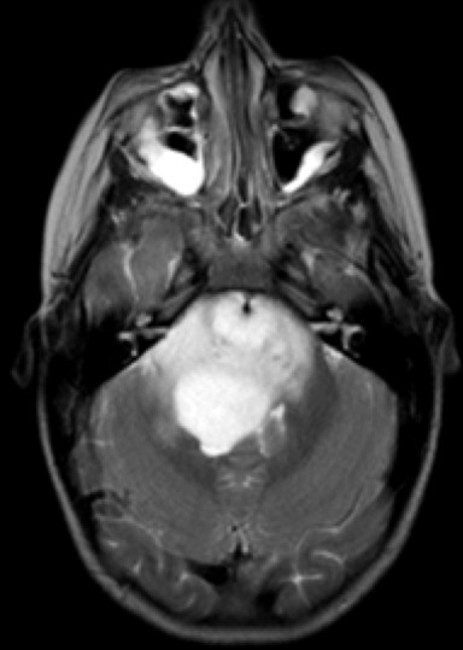
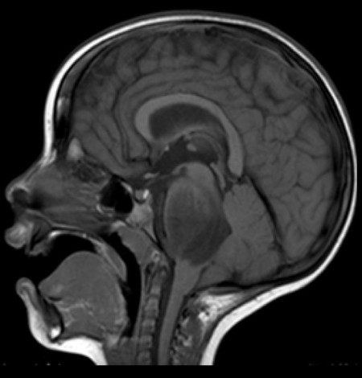
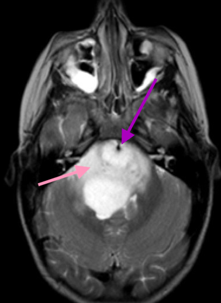
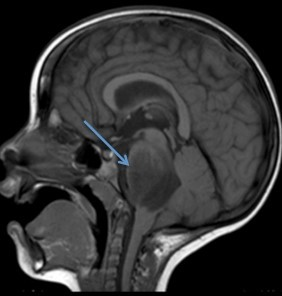
AMedulloblastoma(7%)
BBrainstem glioma(89%)
CGlioblastoma multiforme (GBM)(0%)
DOsmotic demyelination(1%)
EPilocytic astrocytoma(4%)
Your answerB
Correct answerB. Brainstem glioma
Vital Concept
Diffuse intrinsic pontine/brainstem glioma appears as an expansile infiltrative tumor centered in the pons, extending to middle cerebellar peduncles, midbrain, and medulla. It shows hyperintensity on T2-weighted and FLAIR images with minimal or no enhancement. The tumor frequently engulfs the basilar artery and shows exophytic growth into the prepontine cistern.
Explanation
Brainstem glioma
Brainstem gliomas are tumors of the pediatric brain and can be characterized as two major types. One type is the diffuse midline glioma, and the other type is focal glioma involving varying portions of the brainstem. The diffuse midline glioma is a WHO grade IV expansile, infiltrating lesion with characteristic low attenuation on CT and hyperintense T2 signal (pink arrow) without significant enhancement. They typically produce an expansile appearance of the pons (blue arrow), which engulfs adjacent structures such as the basilar artery (purple arrow).
Diffuse midline gliomas carry a poor prognosis and are typically not amenable to surgical resection, while they are poorly responsive to chemotherapy and radiation. They are more commonly seen in the setting of neurofibromatosis type 1. Focal types of brainstem gliomas, such as tectal gliomas, are typically WHO grade I/II lesions, which commonly respond to radiation and carry a better prognosis, very rarely requiring surgical resection.
Incorrect Answers:
A. Medulloblastoma is a WHO grade IV tumor arising from the superior medullary velum in the roof of the fourth ventricle (in children) and from the cerebellar hemisphere (more lateral, more common in adults). They tend to be spherical in shape and are hyperdense but heterogeneously calcified and hemorrhagic on CT, typically enhancing after administration of contrast.
On MRI they are often markedly heterogeneous on T1- and T2-weighted imaging with heterogeneous enhancement and characteristic restricted diffusion. They characteristically spread by subarachnoid seeding and as such, the entire neuraxis should be imaged prior to surgical resection. They typically present with posterior fossa signs such as ataxia and cranial neuropathies.
C. Glioblastoma multiforme (GBM) is a WHO grade IV malignant tumor composed of astrocytes and is the most common intracranial neoplasm in adult patients. It is characterized by a thick enhancing periphery of the tumor mass with internal necrosis. Surrounding edema represents infiltrative tumor extension. Frequently, they cross the midline via the corpus callosum (“butterfly glioma”). In children, GBM more frequently involves posterior fossa structures and the brainstem.
D. Osmotic demyelination can mimic a diffusely infiltrating pontine glioma with expansile appearance, edema, infiltration of pontine structures, and restricted diffusion. However, the clinical setting of rapid correction of hyponatremia will often also be given. A reasonable differential diagnosis for the imaging appearance shown it should be accompanied by the appropriate clinical scenario.
E. Pilocytic astrocytomas are WHO grade I tumors that typically present as cystic cerebellar lesions characterized as having a “cyst with enhancing mural nodule” appearance. They may also arise in the optic pathways of patients with neurofibromatosis type 1.
On CT, they have a characteristic low-attenuation cystic appearance with peripheral enhancing nodularity. They may also have peripheral calcifications. On MRI, they are typically markedly T2 hyperintense with an enhancing nodular component along their periphery when encountered in the cerebellum. They are most commonly present in children aged 5 to 15 years and grow slowly, producing symptoms as a result of mass effect, and have a good prognosis when completely resected.
Vital Concept: Diffuse intrinsic pontine/brainstem glioma appears as an expansile infiltrative tumor centered in the pons, extending to middle cerebellar peduncles, midbrain, and medulla. It shows hyperintensity on T2-weighted and FLAIR images with minimal or no enhancement. The tumor frequently engulfs the basilar artery and shows exophytic growth into the prepontine cistern.
Q2
hard QID 20790
Correct
Of the given options, which of the following is the most likely cause of this 63-year-old male patient’s elbow pain?
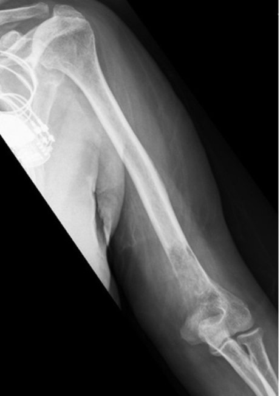
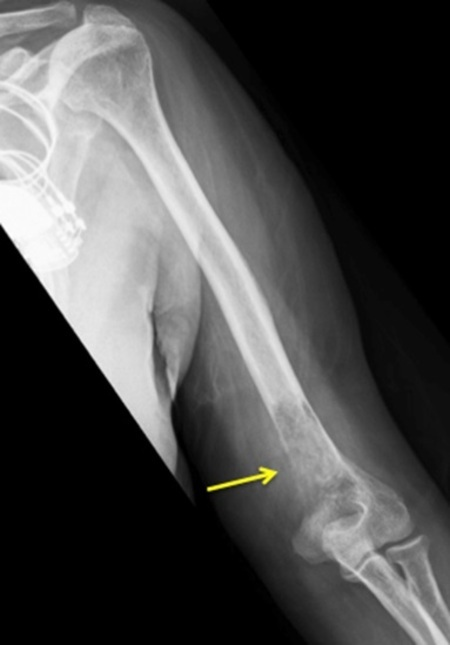
AAneurysmal bone cyst(2%)
BPaget's disease(9%)
CMetastatic disease(70%)
DTraumatic fracture(0%)
EMultiple myeloma(19%)
Your answerC
Correct answerC. Metastatic disease
Explanation
Metastatic disease
Frontal radiograph of the left humerus shows a mottled ill-defined lytic lesion of the distal humeral metaphysis (yellow arrow). This patient had metastatic lung cancer. Common things being common, metastatic disease should be at the top of your differential when you see aggressive bone lesions in any patient population, particularly in patients over 40. Metastases commonly involve hematopoietic bone marrow in the pelvis, rib, cranium, and proximal long bones.
Incorrect Answers:
A. The patient is too old for an aneurysmal bone cyst, and though they can at times appear quite aggressive in that they may expand bone greatly and thin cortex, there should not be frank destruction or non-geographic margins.
B. Degeneration of Paget’s disease to osteosarcoma is seen in fewer than 1% of cases. There should be findings of underlying Paget’s (enlarged and deformed bone with thickening cortex and coarse trabeculations), of which there are none here.
D. No fractures are identified, so trauma is not a good option.
E. Lastly, multiple myeloma presents as numerous well-defined lytic lucencies that usually involve the axial skeleton, not the ill-defined appearance seen here.
Q3
hard QID 49049
Incorrect
A 70 year old patient undergoes bone scan. Which of the following is the most likely diagnosis? The patient is noted to have an elevated alkaline phosphatase as their only laboratory derangement.
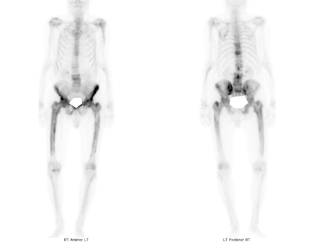
AMetastasis(20%)
BMultiple myeloma(3%)
CFibrous dysplasia(5%)
DPaget’s disease(72%)
Your answerA
Correct answerD. Paget’s disease
Vital Concept
Tc-99m-MDP is highly sensitive but not specific for Paget's disease. It is useful to define the overall extent and distribution of disease. There is marked increased uptake in all phases of the disease, although in the burnt-out sclerotic quiescent phase uptake may be normal. There may also be the “Mickey Mouse sign,” showing uptake in the vertebral body and posterior elements forming an inverted triangular pattern on posterior planar imaging resembling a Mickey Mouse silhouette. It is also known as the heart or clover sign and T or champagne glass sign. The “Lincoln sign” refers to diffuse mandibular uptake forming a bearded appearance.
Explanation
Paget’s disease
The bone scan demonstrates increased radiotracer uptake in the pelvis and both femurs with evidence of expansion. There is also a bowing of both femurs. A bone scan is very sensitive to Paget’s disease and is often utilized to assess the extent of the disease. The scintigraphic appearances are fairly characteristic, showing intense accumulation of radiopharmaceutical throughout the affected part with uniform distribution. Pagetic lesions in long bones appear at the articular margin, progressing along the shaft, and producing a sharp V-shaped advancing edge like a flame. Though its appearance on bone scan can overlap with fibrous dysplasia, Paget's disease is more common in older patients; fibrous dysplasia more commonly presents in a younger age group.
Incorrect Answers:
A. Bone scintigraphy continues to be the most widely used radionuclide technique for investigation of skeletal metastasis primarily due to its widespread availability. Radiotracer uptake depends on local blood flow, osteoblastic activity, and extraction efficiency. Once accumulated in the bone, diphosphonates are absorbed by hydroxyapatite crystals on mineralizing bone surfaces.
A major advantage of radionuclide bone scanning is that imaging of the whole skeleton can be performed. This is important given that metastatic lesions can occur in regions of the appendicular skeleton that are not routinely included in a skeletal survey. A further advantage relates to the high sensitivity of scintigraphy, which enables earlier detection of osseous metastases. The sensitivity and specificity of bone scintigraphy for the detection of bone metastasis are 78% and 48%, respectively.
In particular, studies indicate that only a 5% to 10% alteration in the ratio of the lesion to normal bone is necessary to manifest abnormal tracer accumulation on a bone scan. As a result, osteosclerotic bone metastases can be detected on bone scintigraphy up to 18 months earlier than on plain radiographs.
B. In multiple myeloma, the osteoblastic response to bone destruction is negligible. The bone scan is often therefore normal or may show areas of decreased uptake (photopaenia). Most studies have shown that the sensitivity of skeletal scintigraphy for detecting individual deposits ranges from 40 to 60%.
C. The lesions of fibrous dysplasia usually show nonspecific increased uptake of radiotracer on bone scans.
Vital Concept: Tc-99m-MDP is highly sensitive but not specific for Paget's disease. It is useful to define the overall extent and distribution of disease. There is marked increased uptake in all phases of the disease, although in the burnt-out sclerotic quiescent phase uptake may be normal. There may also be the “Mickey Mouse sign,” showing uptake in the vertebral body and posterior elements forming an inverted triangular pattern on posterior planar imaging resembling a Mickey Mouse silhouette. It is also known as the heart or clover sign and T or champagne glass sign. The “Lincoln sign” refers to diffuse mandibular uptake forming a bearded appearance.
Q4
moderate QID 5088
Incorrect
A 30-year-old female presents with wrist pain following a fall. The following radiograph was obtained. Which of the following is the most likely diagnosis?
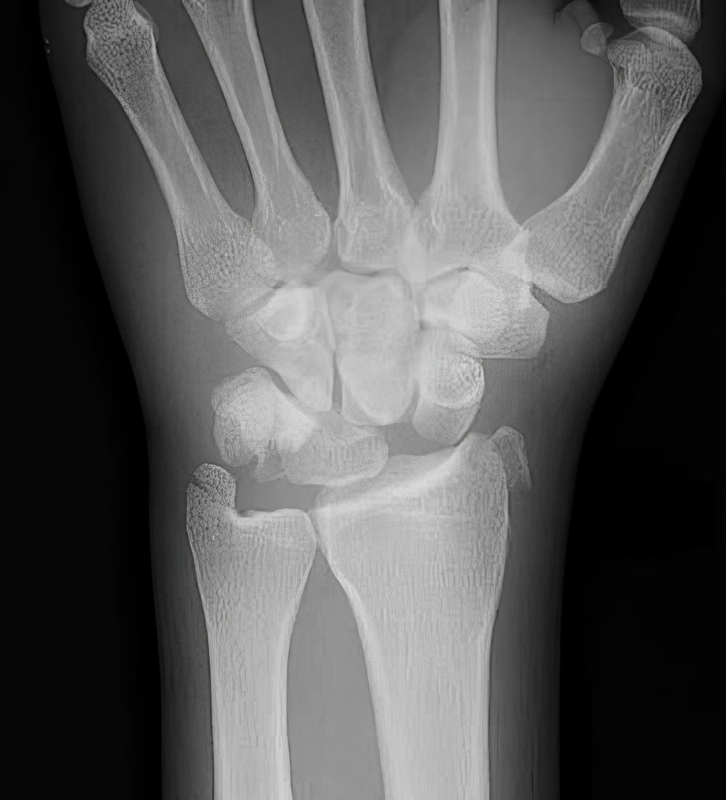
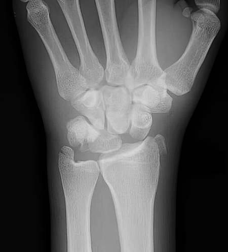
AScapholunate dissociation(84%)
BPerilunate dislocation(4%)
CVolar perilunate dislocation(1%)
DMidcarpal dislocation(2%)
ELunate dislocation(9%)
Your answerE
Correct answerA. Scapholunate dissociation
Vital Concept
Scapholunate dissociation is commonly seen in patients after fall-on-outstretched-hand injuries and can progress to scaphoid lunate advanced collapse (SLAC) if not identified and treated.
Explanation
Scapholunate dissociation
The frontal radiograph demonstrates preservation of Gilula's carpal arcs. The radiographic abnormalities include widening of the scapholunate interval, which normally measures 3 mm or less, and an abnormally increased scapholunate angle (not shown). Mayfield et al. categorized perilunate carpal instability into scapholunate dissociation (stage I), perilunate dislocation (stage II), midcarpal dislocation (stage III), and lunate dislocation (stage IV). Each of these is produced by forced wrist hyperextension (e.g., fall on an outstretched hand). Scapholunate dissociation represents disruption of the scapholunate ligament and rotary subluxation of the scaphoid. If this injury is suspected and initial PA wrist radiographs are equivocal, clenched-fist views are often helpful to exaggerate the scapholunate diastasis and confirm the diagnosis.
Incorrect Answers:
B. Perilunate dislocation results from the same mechanism of injury (forced wrist hyperextension) as the correct diagnosis but involves dorsal dislocation of the capitate relative to the lunate. In this case, the midcarpal articulations have been maintained, excluding a perilunate dislocation.
C. Volar perilunate dislocation results from the same mechanism of injury (forced wrist hyperextension) as the correct diagnosis but involves volar dislocation of the carpus relative to an intact radiolunate articulation. In this case, the midcarpal articulations are intact, excluding a carpal dislocation injury.
D. Midcarpal dislocation results from the same mechanism of injury (forced wrist hyperextension) as the correct diagnosis but involves volar subluxation of the lunate and dorsal dislocation of the capitate. Both the midcarpal and radiolunate articulations have been maintained in this case, excluding a carpal dislocation injury.
E. Lunate dislocation results from the same mechanism of injury (forced wrist hyperextension) as the correct diagnosis but involves volar dislocation of the lunate. In this case, the radiolunate articulation has been maintained, excluding a lunate dislocation.
Vital Concept: Scapholunate dissociation is commonly seen in patients after fall-on-outstretched-hand injuries and can progress to scaphoid lunate advanced collapse (SLAC) if not identified and treated.
Q5
hard QID 48109
Incorrect
Which of the following is the most likely diagnosis?
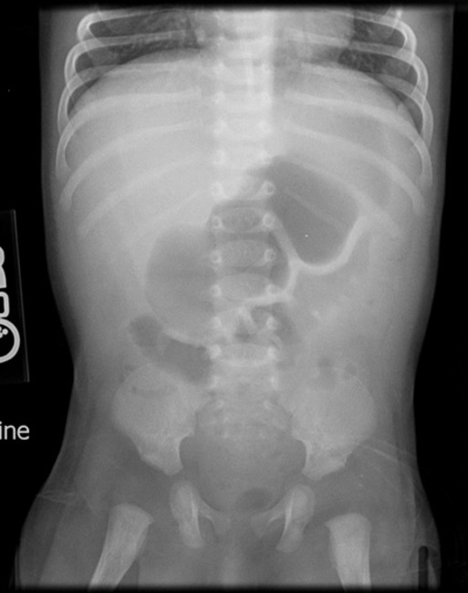
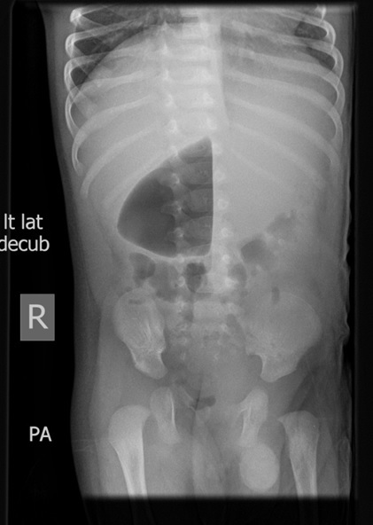
ASmall bowel obstruction(17%)
BAppendicitis(6%)
CHypertrophic pyloric stenosis(69%)
DNecrotizing enterocolitis(9%)
Your answerA
Correct answerC. Hypertrophic pyloric stenosis
Vital Concept
Caterpillar sign shows a single distended gastric air pocket with wavelike peristaltic contours on plain radiograph, indicating gastric outlet obstruction from pyloric stenosis.
Explanation
Hypertrophic pyloric stenosis
Radiographs demonstrate prominent contractions in the stomach in this infant with projectile vomiting, suspicious for hypertrophic pyloric stenosis. The multiple areas of peristalsis in the stomach are known as the caterpillar sign. There is a large air-fluid level in the stomach on the left lateral decubitus. An ultrasound would be the next step for confirmation.
Vital Concept: Caterpillar sign shows a single distended gastric air pocket with wavelike peristaltic contours on plain radiograph, indicating gastric outlet obstruction from pyloric stenosis.
Q6
moderate QID 24095
Correct
A 60-year-old patient was called back after a screening mammography for the calcifications pictured. How should the morphology be described in the BI-RADS lexicon?
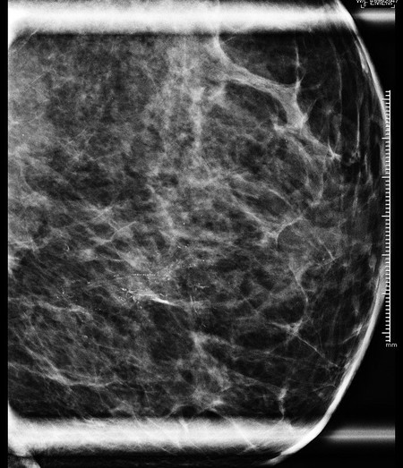
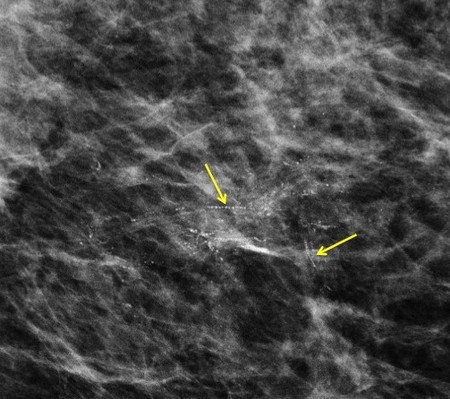
AAmorphous(7%)
BCoarse heterogeneous(2%)
CFine pleomorphic(91%)
DCoarse popcorn-like(0%)
EEggshell(0%)
Your answerC
Correct answerC. Fine pleomorphic
Vital Concept
Pleomorphic calcifications are suspicious morphology requiring biopsy recommendation (BI-RADS 4B), representing intermediate malignancy risk among suspicious calcifications on mammography.
Explanation
Fine pleomorphic
Fine pleomorphic calcifications (yellow arrows) are usually more conspicuous than the amorphic forms and are neither typically benign nor typically malignant irregular calcifications. They vary in size and shape and are usually smaller than 0.5 mm in diameter. This should not be confused with the DISTRIBUTION of the calcifications pictured here, which would be described as linear and branching.
Incorrect Answers:
A. Amorphous or indistinct calcifications are sufficiently small or hazy in appearance so that a more specific morphologic classification cannot be determined.
B. Coarse heterogeneous calcifications are irregular conspicuous calcifications that are generally larger than 0.5 mm and tend to coalesce but are not the size of irregular dystrophic calcifications.
D. Popcorn-like calcifications are the classic large (>2-3 mm in diameter) calcifications produced by an involuting fibroadenoma.
E. Eggshell calcifications are typically benign, thin calcifications that appear as calcium deposited on the surface of a sphere. These deposits are usually smaller than 1 mm in thickness when viewed on edge.
Vital Concept: Pleomorphic calcifications are suspicious morphology requiring biopsy recommendation (BI-RADS 4B), representing intermediate malignancy risk among suspicious calcifications on mammography.
Q7
moderate QID 21116
Correct
A 29-year-old female postpartum patient presents with fever and right lower quadrant pain. Which of the following is the best treatment?
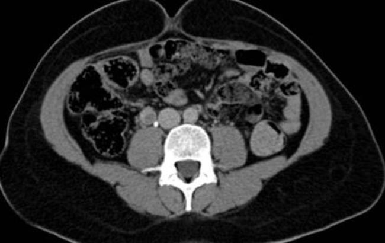
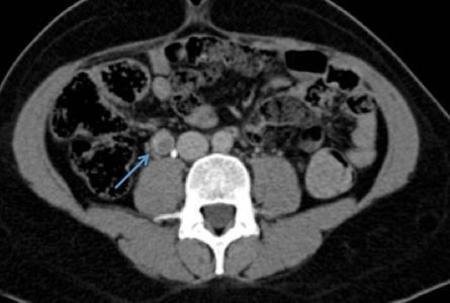
AAppendectomy(3%)
BPercutaneous drainage(0%)
CAspirin(2%)
DIVC filter placement(4%)
EAnticoagulation and antibiotic therapy(90%)
Your answerE
Correct answerE. Anticoagulation and antibiotic therapy
Explanation
Anticoagulation and antibiotic therapy
This is a case of ovarian vein thrombophlebitis. The presence of a right ovarian vein filling defect with expansion of the vein (blue arrow) in the setting of fever and pain cinches the diagnosis. These patients should be treated with therapeutic anticoagulation and antibiotics if fever is present.
Incorrect Answers:
A. Appendectomy would be the recommended therapy in the setting of uncomplicated appendicitis, which is characterized by a dilated, fluid-filled, thickened appendix with or without an associated appendicolith or periappendiceal fluid. None of these findings are seen on the current exam.
B. Percutaneous drainage and antibiotics would be recommended in cases of complicated appendicitis with perforation and abscess formation. Frequently, percutaneous drainage of the associated abscess is utilized to decrease the associated inflammation prior to appendectomy at a later time.
C. Aspirin therapy is recommended for the treatment of epiploic appendagitis, which appears as a venous infarction of an epiploic appendage of the colon, seen on the antimesenteric side of the colon. Frequently there will be surrounding ill-defined hazy fat stranding with a central dot sign, representing the infarcted central vein. No such findings are seen in this case.
D. IVC filter placement is recommended for therapy in cases of lower extremity thromboembolic disease and with an associated contraindication to therapeutic anticoagulation (for example, the presence of intracranial hemorrhage). IVC filter placement is not recommended in the therapy of gonadal vein thrombophlebitis.
Q8
hard QID 85945
Incorrect
A 67-year-old patient presents for evaluation after 2 years of slowly worsening aphasia. The patient has difficulty naming objects and following conversations. Their sentences frequently contain grammatical errors and mispronounced words. The patient’s memory seems to be unaffected. After a clinical evaluation, which confirms the patient's apraxia of speech, MRI of the brain is performed. Which findings are expected?
AGlobal atrophy(5%)
BAtrophy of the hippocampi(5%)
CAtrophy of the caudate heads(5%)
DFrontal lobe atrophy(42%)
EAtrophy of the parietal lobes(43%)
Your answerE
Correct answerD. Frontal lobe atrophy
Vital Concept
Non-fluent primary progressive aphasia is a subtype of frontotemporal dementia. The diagnosis is clinical, but MRI findings in this disease include atrophy in the dominant frontal lobe and operculum/insula.
Explanation
Frontal lobe atrophy
Primary progressive aphasia is a subtype of frontotemporal dementia. Primary progressive aphasia is further divided into non-fluent and semantic variants. This patient likely has non-fluent primary progressive aphasia, which is characterized by difficult speech generation (especially in the pronunciation or articulation of words), grammatical errors, and impaired comprehension. The semantic variant is characterized by word-finding difficulty and trouble naming and understanding individual words, particularly nouns. However, grammatical usage and spoken language tend to remain intact. In frontotemporal dementia, imaging shows atrophy of the frontal and/or temporal lobes; in the case of non-fluent primary progressive aphasia, this most notably involves the frontal lobe on the dominant side (usually left) along with the adjacent insular/opercular regions.
Visuospatial and memory impairments generally do not occur in frontotemporal dementia. However, some patients with frontotemporal dementia also develop Alzheimer’s disease, which can be uncovered by clinical history and beta-amyloid imaging. A third variant of primary progressive aphasia, the logogenic variant, has Alzheimer’s disease pathology and is not considered a subtype of frontotemporal dementia.
Incorrect Answers:
A.
Global atrophy is a nonspecific imaging finding. In patients with frontotemporal dementia and Alzheimer’s disease, global atrophy might be expected, but in patients with non-fluent primary progressive aphasia without memory changes, atrophy in the dominant frontal lobe and operculum/insula is more likely.
B.
Atrophy of the hippocampi in the setting of memory impairment would be expected in Alzheimer’s disease.
C.
Atrophy of the caudate head occurs in Huntington’s disease.
E.
Atrophy of the parietal lobes can occur in posterior cortical atrophy, a rare neurodegenerative disorder that is often linked to Alzheimer’s disease (although other pathologies may also cause this finding).
Vital Concept: Non-fluent primary progressive aphasia is a subtype of frontotemporal dementia. The diagnosis is clinical, but MRI findings in this disease include atrophy in the dominant frontal lobe and operculum/insula.
Q9
easy QID 38126
Incorrect
Which of the following is the mechanism of action of the radiotracer utilized in this examination?
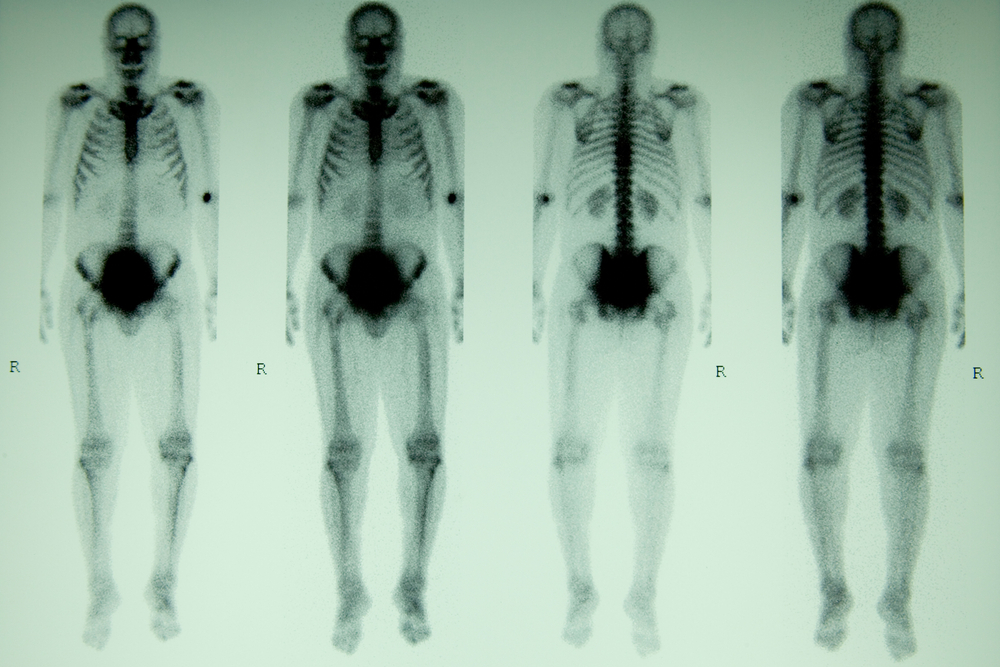
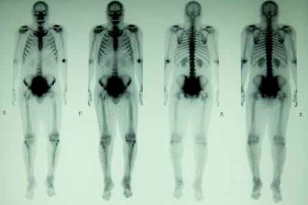
APhagocytosis(2%)
BUptaken by sodium symporter.(3%)
CChemical adsorption(91%)
DTubular secretion(0%)
Your answerB
Correct answerC. Chemical adsorption
Explanation
Chemical adsorption
The images demonstrate skeletal scintigraphy utilizing Tc99m MDP (Technetium 99m-methyl diphosphonate) which is an analog to calcium hydroxyapatite and is incorporated within newly formed/healing osseous matrix by way of chemical adsorbtion.
Incorrect Answers:
A. Tc99m labeled sulfur colloid is taken up via the reticuloendothelial system (i.e. spleen, liver, marrow) by phagocytosis in the Kupffer cells.
B. I-123 is transported into thyrocytes by the Na-I (sodium-iodine) co-transporter or symporter.
D. Tc99m MAG3 (mercaptoacetyltriglycine) is secreted into the proximal convoluted tubule of the nephron.
Q10
QID 56860
Correct
What is the effect on CTDIvol when the pitch is doubled?
ADose is doubled(3%)
BDose is decreased by ¼(6%)
CDose is halved(87%)
DDose is unaffected(4%)
Your answerC
Correct answerC. Dose is halved
Explanation
Dose is halved
CTDIvol = CTDIw / Pitch
Pitch is calculated by dividing table distance traveled in 1 gantry rotation by slice thickness. Since pitch has an inverse linear relationship with dose, when the pitch is doubled, the dose is reduced by half. However, when pitch is increased in an effort to reduce dose, the trade-off is a reduction in image quality through a decreased z-axis resolution.
Incorrect Answers:
A. This would occur if the pitch was halved.
B. This would occur if the pitch was increased by 4x.
D. Pitch and dose have an inverse linear relationship.
Q11
easy QID 56784
Correct
Which of the following is the most appropriate diagnosis for the 2 images shown below? Note that there is also a lack of bone marrow edema and the presence of fibrocartilaginous material between the involved bones shown on magnetic resonance image (MRI).
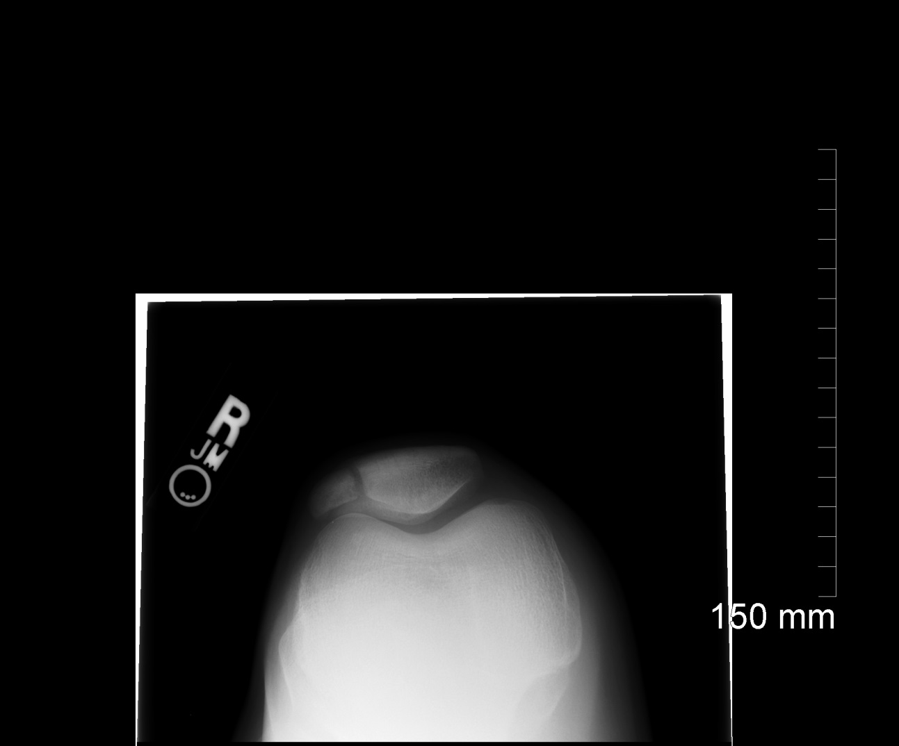
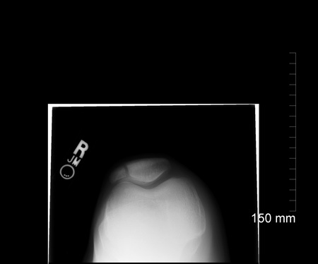
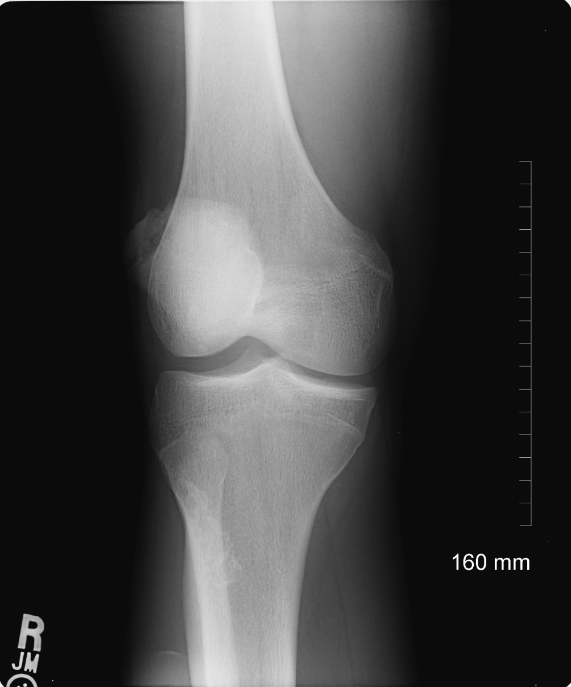
AOsteoarthritis(0%)
BPatellar fracture(3%)
CHorizontal fracture through tibial plateau(0%)
DBipartite patella(96%)
Your answerD
Correct answerD. Bipartite patella
Explanation
Bipartite patella
A bipartite patella is a normal developmental variation in which the superior lateral ossification center of the patella fails to fuse. In most individuals, this is asymptomatic. However, this can result in pain related to abnormal biomechanics and the avulsive stress. This should not be mistaken for a fracture. Note the irregular margins and rounded edges. Also note the characteristic superolateral location.
The presence of fibrocartilaginous material between the two bones on MRI helps confirm a diagnosis of bipartite patella. An MRI can also show the condition of articular cartilage at the patellar-fragment interface. The lack of bone marrow edema helps rule out a bone fracture.
Incorrect Answers:
A. The hallmark of osteoarthritis is joint space narrowing with marginal osteophyte formation. Joint spaces here are well preserved, and there is no osteophyte formation.
B. The appearance of the patella is compatible with a bipartite morphology, not a fracture. Note the rounded, irregular margins and the characteristic superior lateral location.
C. There is no tibial fracture. The horizontal lucency traversing the medial and lateral tibial plateaus is a remnant of the growth plate. Note the similar finding in the distal femur.
Q12
hard QID 49053
Correct
Which one of the following quality control parameters for a gamma camera is true?
AIntrinsic tests are performed monthly.(15%)
BExtrinsic tests are performed monthly.(14%)
COnly a point source is utilized for both intrinsic and extrinsic tests.(5%)
DA 2 to 5% non-uniformity is allowed, but less is permitted in SPECT.(66%)
Your answerD
Correct answerD. A 2 to 5% non-uniformity is allowed, but less is permitted in SPECT.
Vital Concept
Intrinsic uniformity tests detector alone using distant point source without collimator. Extrinsic uniformity tests complete system with collimator using flood sources - performed daily (extrinsic) and weekly (intrinsic) with 5 to 15 million counts.
Explanation
A 2 to 5% non-uniformity is allowed, but less is permitted in SPECT.
Intrinsic test is without the collimator, is performed weekly, and generally uses a point source. Extrinsic test is with the collimator, is performed daily, and generally uses a flood source. A 2 to 5% non-uniformity is allowed with gamma cameras, but less in SPECT.
Vital Concept: Intrinsic uniformity tests detector alone using distant point source without collimator. Extrinsic uniformity tests complete system with collimator using flood sources - performed daily (extrinsic) and weekly (intrinsic) with 5 to 15 million counts.
Q13
easy QID 3067
Correct
This 35-year-old female patient who has recurrent urinary tract infection underwent sonography of the abdomen. Which of the following is the diagnosis based on the image below?
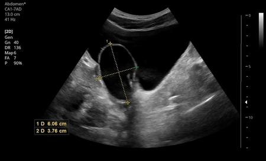
ARight ureteral calculus(0%)
BLeft ureteral calculus(0%)
CRight vesico-ureteric junction (VUJ) calculus with right hydroureter(1%)
DRight ureterocele(99%)
ENormal study(0%)
Your answerD
Correct answerD. Right ureterocele
Vital Concept
Ureteroceles appear as thin-walled cystic structures arising from the posterior bladder wall at the trigone, with no internal vascularity on color Doppler. Ureterocele is associated with duplication of the renal collecting system.
Explanation
Right ureterocele
There is a cystic dilatation of the terminal end of the right ureter at the right VUJ (vesico-ureteric junction). A ureterocele is a congenital cystic dilatation of the terminal part of the ureter. It is usually seen in children but can also be seen in adults. There is usually associated hydroureter and hydronephrosis on the same side. This condition may be associated with ureteral calculi.
Incorrect Answers:
A. There is no evidence of calculi in the right ureter.
B. The left ureter is normal.
C. See the explanation above.
E. This is not a normal study, as explained above.
Vital Concept: Ureteroceles appear as thin-walled cystic structures arising from the posterior bladder wall at the trigone, with no internal vascularity on color Doppler. Ureterocele is associated with duplication of the renal collecting system.
Q14
moderate QID 2929
Correct
Which of the following is the most likely diagnosis of the right renal lesion?
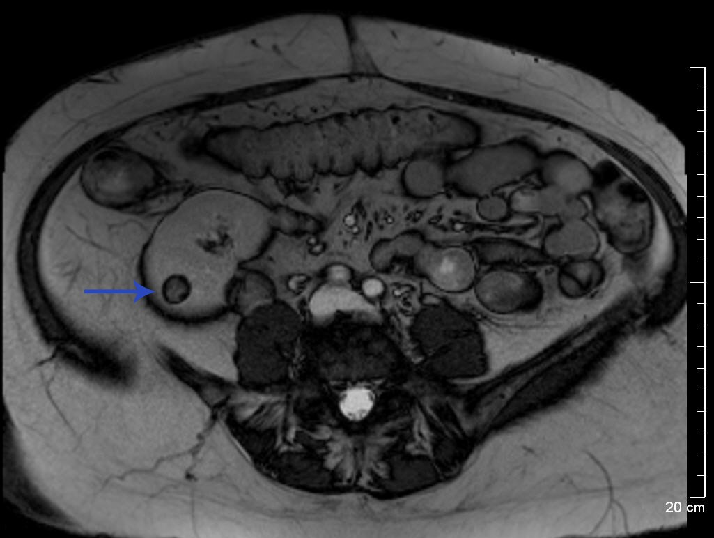
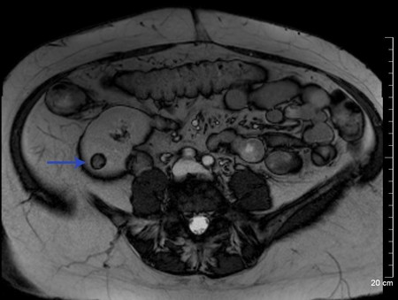
ASimple cyst(1%)
BAngiomyolipoma(92%)
CRenal cell carcinoma(5%)
DLymphoma(0%)
EPulsation artifact(1%)
Your answerB
Correct answerB. Angiomyolipoma
Vital Concept
India ink artifact at the renal mass-kidney interface and loss of lesion signal on out of phase imaging both indicate fat within the lesion, which is diagnostic of angiomyolipoma.
Explanation
Angiomyolipoma
The MRI image shown is an out-of-phase image (T2*GRE). In-phase and out-of-phase images are generally T1-weighted gradient-recall echo (GRE) sequences. What is unique about them is the timing. Because of slightly different microenvironments of fat and water, the protons have slightly different Larmor frequencies. The difference in precession speed means that there will be times when the protons are "in phase" and times when they are "out of phase." At 1.5 T, the signals will be in phase approximately every 4.4 ms and, therefore, out of phase at 2.2 ms, 6.6 ms, and so on. By adjusting the time-to-echo to correlate with the in-phase and out-of-phase times, the in-phase and out-of-phase images are obtained. The main goal is the demonstration of Type 2 chemical shift artifact to show the presence of fat. The dark line surrounding the lesion (and the abdominal organs) is known as "India ink" artifact and is the result of the presence of fat and water protons in the same voxel. Remember, only voxels containing both water and fat will show signal loss on out-of-phase imaging, as opposed to fat-saturation sequences. Pure fat and pure water will not lose signal. You can appreciate the power of the sequence in the shown image. A fat-rich lesion in the right kidney shows a surrounding "India ink artifact" confirming fat in the lesion, which shares voxels with the water-rich kidney along the margins. This is most compatible with angiomyolipoma.
Incorrect Answers:
A. A simple renal cyst is hypointense on T1 imaging and hyperintense of T2 imaging.
C. Renal cell carcinoma is heterogeneous on T1 imaging, while T2 imaging depends on the histological type of RCC [clear cell (hyperintense), papillary (hypointense)].
D. Lymphoma would appear hypointense to the surrounding renal parenchyma on T1 imaging and hyperintense to the surrounding renal parenchyma on T2.
E. Pulsation artifact occurs as a result of fluid or tissue moving during the process of the scan, resulting in a phenomenon known as "ghosting" which occurs in the direction of the short axis of the image.
Vital Concept: India ink artifact at the renal mass-kidney interface and loss of lesion signal on out of phase imaging both indicate fat within the lesion, which is diagnostic of angiomyolipoma.
Q15
hard QID 4989
Incorrect
A 52-year-old male presents with the abnormality seen in the image below, which was biopsied by fine-needle aspiration (FNA). The results of the FNA showed evidence of malignancy, but the pathologist was unable to give any more information about the possible source or type. Which of the following should the provider suspect?
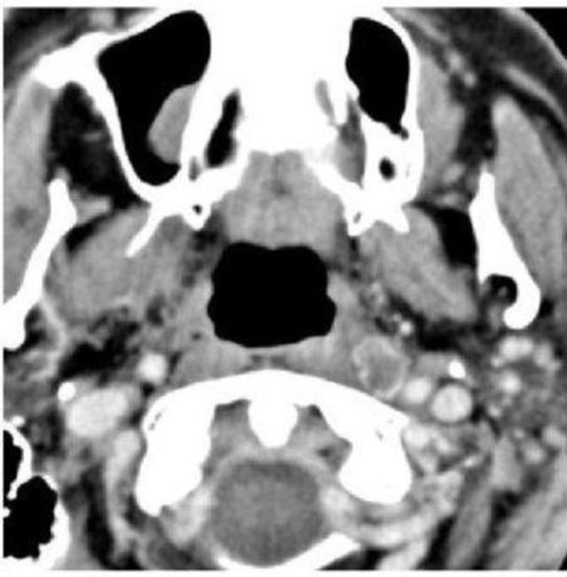
ASquamous cell carcinoma of the lip(1%)
BSquamous cell carcinoma of the floor of the mouth(6%)
CSquamous cell carcinoma of the tongue base(19%)
DSquamous cell carcinoma of the oral tongue(3%)
ENasopharyngeal carcinoma(71%)
Your answerC
Correct answerE. Nasopharyngeal carcinoma
Vital Concept
Nasopharyngeal carcinoma is the most common type of primary nasopharyngeal malignancy, occurring most frequently in Asia. Nodal metastases are usually present at the time of diagnosis, usually found effacing the fossa of Rosenmuller. Level II, V, and retropharyngeal nodes are commonly involved.
Explanation
Nasopharyngeal carcinoma
The most likely underlying diagnosis is nasopharyngeal carcinoma. Retropharyngeal lymph nodes represent the most common first echelon of metastatic spread from nasopharyngeal carcinoma, as this tumor has a strong propensity for early lymphatic dissemination. The peripheral enhancement pattern suggests central necrosis, which is characteristic of metastatic lymph nodes. Retropharyngeal nodal involvement is classified as N1 disease in nasopharyngeal carcinoma staging and indicates the need for further evaluation of the primary nasopharyngeal site. These retropharyngeal nodes are frequently involved early in the disease process and can be identified from the skull base down to the upper cervical levels.
Incorrect Answers:
A, C. This is not the spread pattern of oral cavity malignancies, tongue base, or skin.
B, D. Of squamous cell primaries, nasopharyngeal carcinoma is by far the most common. Additional sites include the posterior wall of the oropharynx and much less commonly, the posterior wall of the hypopharynx.
Vital Concept: Nasopharyngeal carcinoma is the most common type of primary nasopharyngeal malignancy, occurring most frequently in Asia. Nodal metastases are usually present at the time of diagnosis, usually found effacing the fossa of Rosenmuller. Level II, V, and retropharyngeal nodes are commonly involved.
Q16
moderate QID 55991
Incorrect
A 47-year-old male patient presented for evaluation of dull right flank pain. The patient reported no abdominal pain, nausea/vomiting, dysuria, hematuria, hematochezia, melena, fever, and weight loss. Ultrasound demonstrated a cystic lesion in the right hepatic lobe which was further evaluated with MRI. Which of the following is the diagnosis?
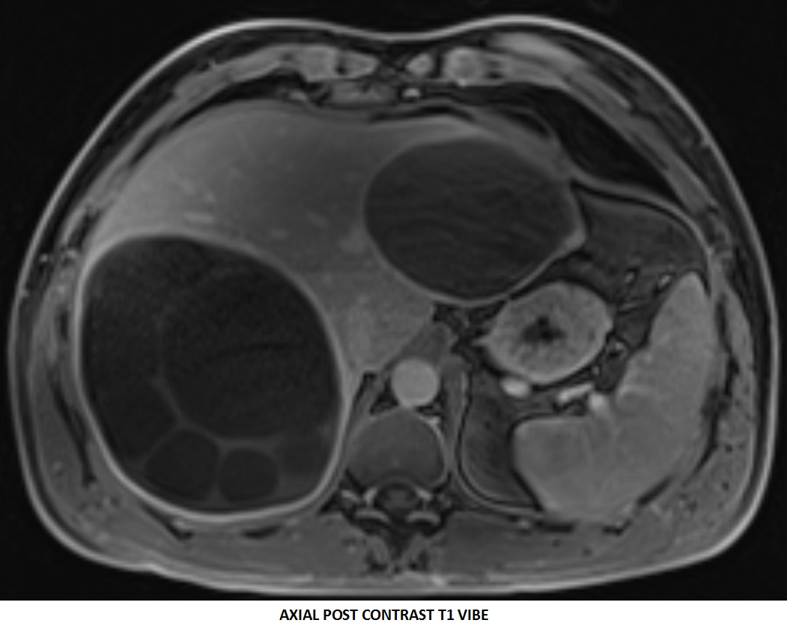
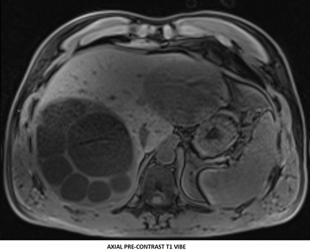
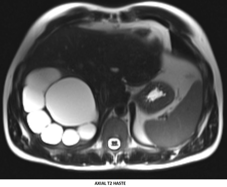
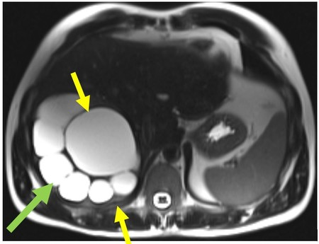
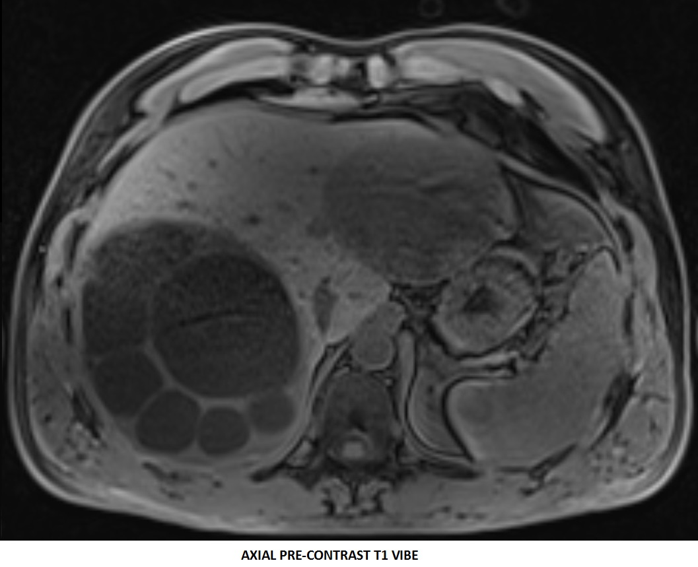
AAmebic hepatic abscess(3%)
BBiliary cystadenoma(13%)
CPyogenic liver abscess(0%)
DHepatic hydatid cyst(83%)
Your answerB
Correct answerD. Hepatic hydatid cyst
Vital Concept
T2 hyperintense cystic lesion with septations and daughter cysts suggests hepatic hydatid cyst requiring careful surgical planning to prevent rupture.
Explanation
Hepatic hydatid cyst
Hydatid disease primarily affects the liver and demonstrates characteristic imaging features. On MRI, hydatid cyst appears as a large cyst with multiple internal daughter cysts typically in a peripheral distribution (green arrow). The cysts are usually T2 hyperintense with variable T1 hyperintensity (depending on the proteinaceous content). Low signal intensity rim of the cysts on T2 weighted images is a characteristic feature of hydatid cyst (yellow arrows). Post-contrast images demonstrate rim enhancement. Floating membranes referred to as water lily sign is another imaging feature (not depicted on the images presented).
Incorrect Answers:
A. On MRI, amebic abscesses demonstrate homogeneous low signal intensity and high signal intensity on T1- and T2-weighted images, respectively. Perilesional edema is seen on T2-weighted MR images in 50% of cases. Clinically, patients are acutely ill with high fever and abdominal pain. In addition, the patients are from high prevalent areas or have a history of recent travel to those locations.
B. Biliary cystadenomas are rare cystic tumors of the liver, which are considered premalignant. They are typically multiseptated cystic tumors with well-defined fibrous capsules and mural nodules. Variable T1 signal is possible owing to the nature of the contents. Calcification may be seen along the septa and the capsule. The presence of eccentric smaller daughter cysts would favor echinococcal disease (Hyatid) over this diagnosis.
C. Pyogenic abscesses are classified as microabscesses (< 2 cm ) versus macroabscesses. Microabscesses can be scattered throughout the liver or coalesce into a cluster. Imaging appearance of the macroabscess is similar to an amebic abscess. It is unilocular with variable T1 and high T2 signal and perilesional edema.
Vital Concept: T2 hyperintense cystic lesion with septations and daughter cysts suggests hepatic hydatid cyst requiring careful surgical planning to prevent rupture.
Q17
hard QID 24097
Incorrect
A 57-year-old patient presents with a palpable breast mass. A diagnostic mammogram is performed, followed by the ultrasound shown below. Assuming that the gain is set properly, which of the following is the most likely diagnosis?
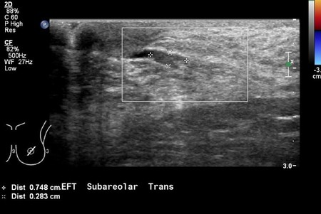
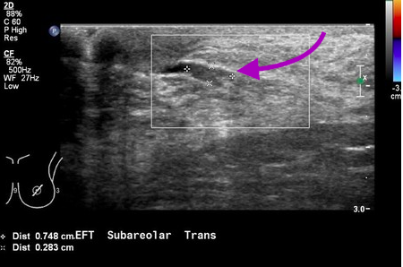
ADuctal ectasia with debris(55%)
BIntraductal papilloma(43%)
CInvasive ductal carcinoma(2%)
DInvasive papillary carcinoma(1%)
ENipple adenoma(0%)
Your answerB
Correct answerA. Ductal ectasia with debris
Vital Concept
Ductal ectasia with intraluminal debris requires real-time ultrasound assessment to differentiate mobile debris (blood/debris, likely benign) from fixed intraluminal content, which carries malignancy risk and warrants biopsy due to association with ductal carcinoma in situ and invasive carcinoma.
Explanation
Ductal ectasia with debris
The ultrasound shows a focally dilated duct (blue arrow) with an echogenic intraductal lesion (purple arrow). There is no flow within this lesion. As such, this is most likely debris within an ectatic duct.
Ductal wall abnormalities and hypoechoic intraluminal low-level echoes are often subtle findings that require careful scrutiny with appropriate gain settings. A bulging ductal contour or undulating ductal walls is another suspicious feature of malignancy that is worth noting. During the evaluation of intraductal content, real-time observation will help differentiate floating debris or blood from a fixed lesion.
Color Doppler imaging may identify prominent feeding vessels or vascularity within the duct lumen, raising the level of suspicion for malignancy or a high-risk lesion.
In this case, this represents a suspicious lesion and should be reported as Bi-RADS 4a. A biopsy should be considered.
Incorrect Answers:
B. Intraductal papilloma is the main differential consideration. Papilloma may be seen as a well-defined solid nodule or intraductal mass which may either fill a duct or be partially outlined by fluid - either within a duct or by forming a cyst. Color Doppler will demonstrate a vascular stalk. A dilated duct can be frequently visible sonographically.
C. Invasive ductal carcinoma classically appears as a solid hypoechoic mass, with an echogenic halo, irregular margins, and posterior shadowing.
D. If an intraductal mass has associated hemorrhage, there is an increased concern for papillary carcinoma. These are typically larger, more complex cystic and solid masses, and present with bloody nipple discharge.
E. A nipple adenoma is caused by papillary hyperplasia of ductal epithelium. It presents as a circumscribed homogeneously hypoechoic mass which is round or oval, with lobulated margins.
Vital Concept: Ductal ectasia with intraluminal debris requires real-time ultrasound assessment to differentiate mobile debris (blood/debris, likely benign) from fixed intraluminal content, which carries malignancy risk and warrants biopsy due to association with ductal carcinoma in situ and invasive carcinoma.
Q18
easy QID 47282
Correct
A 52-year-old female patient undergoes an ultrasound of their thyroid for a palpable nodule. Which of the following is the most likely diagnosis?
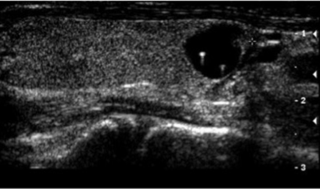
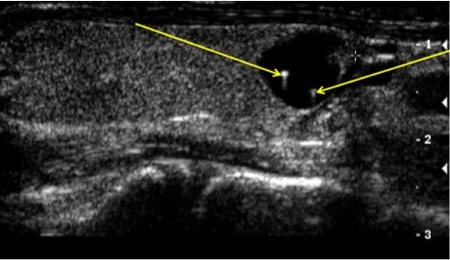
APapillary carcinoma(3%)
BFollicular carcinoma(0%)
CAdenoma(0%)
DColloid cyst(96%)
EAnaplastic(0%)
Your answerD
Correct answerD. Colloid cyst
Vital Concept
Large comet-tail artifacts (>1mm) in thyroid nodules are strongly associated with benign colloid nodules and indicate the nodule can generally be considered benign, avoiding biopsy.
Explanation
Colloid cyst
The image provided shows a unilocular, thin-walled cyst which is primarily anechoic. Echogenic foci with "comet tail" artifacts are present (yellow arrows). These features are characteristic of a colloid cyst. Colloid cysts are non-neoplastic benign nodules composed of irregularly enlarged follicles containing abundant colloids. Echogenic foci with "comet tail" artifacts are characteristic and represent suspended colloid aggregates. It is important to differentiate these from microcalcifications, which are a specific feature of malignancy. Microcalcifications do not have comet tail artifact. Thyroid calcifications can be classified as microcalcification, coarse calcification, or peripheral calcification.
Incorrect Answers:
A. and B. Microcalcifications are found in 29% to 59% of all primary thyroid carcinomas, most commonly in papillary thyroid carcinoma. Their occurrence has been described in follicular medullary thyroid carcinomas less frequently.
C. True adenomas are benign neoplasms of thyroid glandular epithelium with fibrous encapsulation, whereas adenomatous nodules are foci of adenomatous hyperplasia with incomplete capsules. They are prone to hemorrhagic degeneration, which can appear to mimic a colloid cyst. The comet tail artifact would not be seen, however.
E. Large irregularly shaped dystrophic calcifications also may occur and are secondary to tissue necrosis. As such, they may be seen in anaplastic carcinoma, which is an aggressive and rapidly growing neoplasm.
Vital Concept: Large comet-tail artifacts (>1mm) in thyroid nodules are strongly associated with benign colloid nodules and indicate the nodule can generally be considered benign, avoiding biopsy.
Q19
hard QID 22577
Correct
A 6-week-old male patient presents for follow-up imaging of an abnormality noted on prenatal ultrasound. Which of the following is the diagnosis?
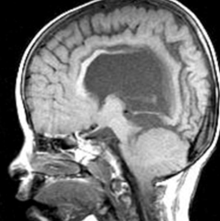
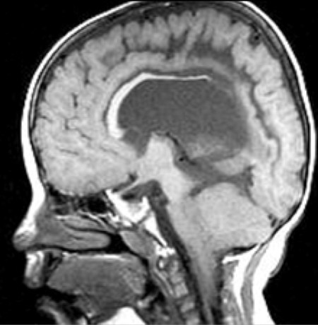
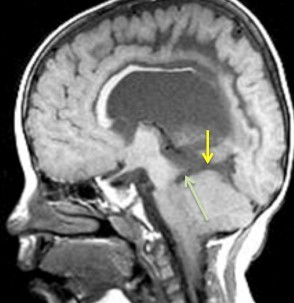
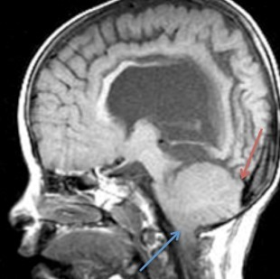
AChiari I malformation(9%)
BChiari II malformation(68%)
CChiari III malformation(3%)
DIsolated callosal dysgenesis(19%)
EVein of Galen malformation(2%)
Your answerB
Correct answerB. Chiari II malformation
Vital Concept
Chiari II malformation shows reliable sagittal plane features including downward cerebellar herniation, downward displacement of medulla and fourth ventricle, medullary kinking, beaked tectum, and hypoplastic tentorium. Small fourth ventricle is characteristic.
Explanation
Chiari II malformation
Chiari malformations are a series of malformations of the cerebellum and hindbrain with a characteristic classification system. Chiari 1 malformations are a protrusion of the cerebellar tonsils below the foramen magnum, typically peg-like in shape and greater than 5 mm below the foramen magnum. Other spinal segmentation anomalies may be seen in addition, such as cervical cord syrinx or tethered cord. Chiari II malformations are characterized by the presence of a small posterior fossa (red arrow) with herniation of hindbrain tissue posterior to the upper cervical cord (blue arrow). The cerebellar tonsils tend to wrap around the medulla, while the fourth ventricle is stretched and narrowed. Cerebellar tissue often protrudes through the incisura (the “towering cerebellum” – yellow arrow) and impacts upon the tectum, producing a “beaked” appearance (green arrow). The absence of falx produces interdigitation of the cerebral gyri. Callosal dysgenesis is often present. Patients frequently additionally have open neural tube defects in the spine, such as myelomeningoceles, which are more frequent in the lumbar spine than in the cervical spine. Chiari III malformations are characterized by the presence of an upper cervical or occipital defect with associated meningoencephalocele. The cerebellum, brainstem, and/or upper cervical spinal cord may be pulled into the defect.
Incorrect Answers:
A and C. See the description above.
D. Callosal dysgenesis is characterized by absence of part or all of the corpus callosum. The corpus callosum develops from anterior to posterior beginning at the genu and proceeding to the splenium, with the rostrum being the last portion to develop. Failure of callosal development produces several other characteristic findings on brain imaging, including dilatation of the atria of the lateral ventricles (colpocephaly), Probst bundles (parallel callosal fiber tracts), and absence of the commissures. A commonly associated finding is the midline lipoma in the interhemispheric fissure. Callosal dysgenesis is present here, but there are other abnormalities as well.
E. Vein of Galen malformation is an abnormal arteriovenous fistula between choroidal arteries and the median prosencephalic vein of Markowski (MPV), a venous precursor to the vein of Galen. The result is abnormal dilatation of the MPV with a large midline varix at the level of the quadrigeminal plate cistern. It is a common cause of neonatal high-output heart failure. On CT imaging, look for a large iso- to hyperdense lesion in the quadrigeminal plate cistern, which markedly enhances on post-contrast imaging. On MRI, look for a large, prominent flow void in this location with adjacent pulsation artifact and marked enhancement on post-contrast sequences. There are two types: choroidal and mural. Choroidal type malformations are characterized by the presence of multiple feeder arteries from choroidal, pericallosal, and thalamoperforators. Mural type malformations typically have feeders from only one source. Vein of Galen malformations are typically treated via endovascular techniques, often with coil embolization.
Vital Concept: Chiari II malformation shows reliable sagittal plane features including downward cerebellar herniation, downward displacement of medulla and fourth ventricle, medullary kinking, beaked tectum, and hypoplastic tentorium. Small fourth ventricle is characteristic.
Q20
moderate QID 56242
Correct
A 63-year-old male patient presents with chronic lower back pain. Magnetic resonance imaging (MRI) reveals a large lumbosacral lesion with pre-and post-contrast MRI signal characteristics. Which of the following is the most likely diagnosis?
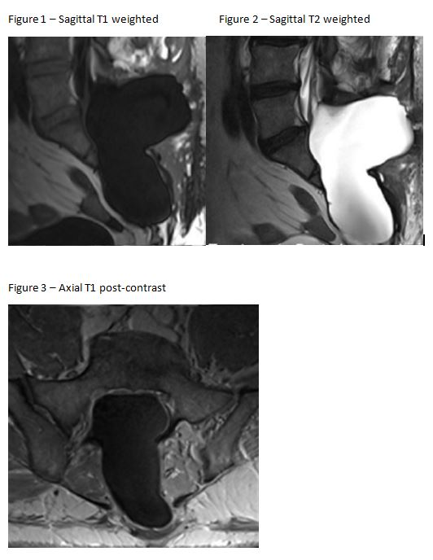
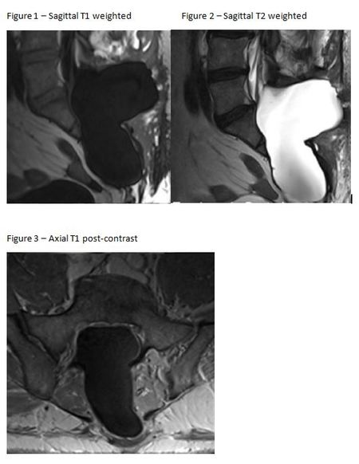
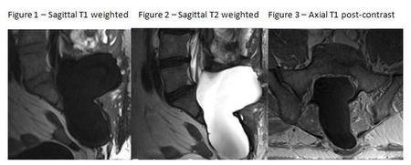
AChordoma(6%)
BTarlov cyst(91%)
CSacrococcygeal teratoma(2%)
DMyxopapillary ependymoma(1%)
Your answerB
Correct answerB. Tarlov cyst
Vital Concept
Tarlov cysts are cerebrospinal fluid-filled perineural cysts with nerve root fibers in their walls that commonly erode and remodel sacral bone. Large cysts extending beyond the posterior sacrum can cause radicular pain, neurological deficits, and bowel or bladder dysfunction requiring percutaneous fibrin sealant injection or surgical intervention.
Explanation
Tarlov cyst
MRI images reveal a large bi-lobed lesion causing regional osseous remodeling and extra-spinal extension into the dorsal soft tissues. There is a uniform low T1/high T2 signal with thin peripheral enhancement. Imaging findings are most consistent with a Tarlov cyst (also known as a perineural cyst).
Although they are most common in the lumbosacral spine, they can occur anywhere along the neural axis. They should follow the cerebrospinal (CSF) signal on all sequences. The vast majority are asymptomatic, but occasionally patients report localized pain or neurologic symptoms. Aspiration may offer temporary relief, but surgical fenestration/resection offers more definitive treatment.
Incorrect Answers:
A. Chordomas do occur in a similar location but would be epicentered within the osseous structures and demonstrate heterogeneous signal characteristics with enhancement.
C. Sacrococcygeal teratomas would contain all three germlines and would not demonstrate uniform non-enhancement as seen in this case.
D. Myxopapillary ependymomas would also occur in the lumbosacral thecal sac as above but would demonstrate heterogeneous enhancing components.
Vital Concept: Tarlov cysts are cerebrospinal fluid-filled perineural cysts with nerve root fibers in their walls that commonly erode and remodel sacral bone. Large cysts extending beyond the posterior sacrum can cause radicular pain, neurological deficits, and bowel or bladder dysfunction requiring percutaneous fibrin sealant injection or surgical intervention.
Q21
QID 43916
Correct
What is the most causative agent, in developed countries, in the process shown in this 10-year-old male with back pain and fever?
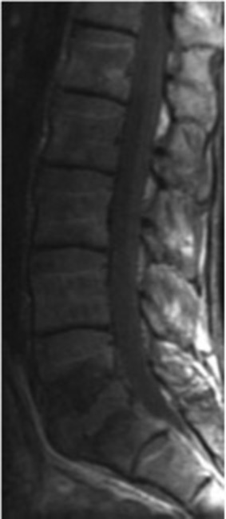
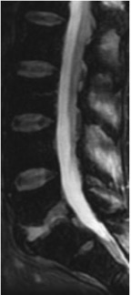
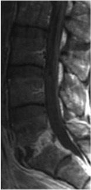
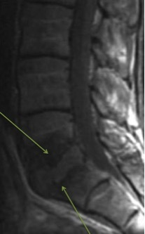
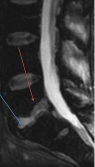
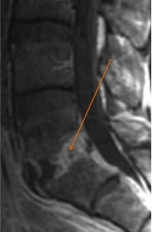
AMycobacterium tuberculosis(7%)
BStreptococcus pneumoniae(5%)
CStreptococcus viridans(1%)
DStaphylococcus aureus(86%)
ECryptococcus neoformans(0%)
Your answerD
Correct answerD. Staphylococcus aureus
Explanation
Staphylococcus aureus
The T2 MR shows increased signal at the L5-S1 disc (blue arrow) with endplate irregularity (red arrow). The T1 pre-contrast image shows low-signal marrow edema at the adjacent endplates (green arrows). Following contrast administration, there is avid enhancement of the disc (orange arrow). These findings along with the history are diagnostic of discitis.
Spondylodiscitis represents infection involving the intervertebral disc with frequent involvement of the adjacent vertebral body. Although it can occur anywhere, it most commonly involves lumbar spine. There is a bimodal age distribution of pediatric and elderly patients. In pediatric patients, the infection often starts in the intervertebral disc itself, whereas in adults infection more often spreads from the adjacent vertebral body endplate. The typical presentation is that of infection: fever and back pain.
Patients are often bacteremic secondary to sources such as endocarditis and intravenous drug use. Additional risk factors include spinal instrumentation, remote infection, immunosuppression, long-term corticosteroid administration, diabetes mellitus, malnutrition, and malignancy.
The most common causative organism is
Staphylococcus aureus.
Incorrect Answers:
A. B. C. E. The other answer choices represent less frequent etiologies.
Q22
easy QID 37612
Correct
Which of the following is true regarding adverse reactions to gadolinium-based contrast media?
AThey are safe for use in pregnant and nursing patients(1%)
BReactions to GBCM are more common than to iodinated contrast(0%)
CTreatment for allergic type reactions is similar to that for iodinated contrast reactions(97%)
DHistory of a prior reaction does not increase one's risk of a subsequent reaction(1%)
EAdverse effects to the fetus do not occur(0%)
Your answerC
Correct answerC. Treatment for allergic type reactions is similar to that for iodinated contrast reactions
Vital Concept
The key concept is that treatment of gadolinium-based contrast reactions is identical to that of iodinated contrast reactions, with immediate hypersensitivity reactions managed using standard anaphylaxis protocols, including intramuscular epinephrine as first-line therapy, airway support, and adjunctive medications as indicated.
Explanation
Treatment for allergic type reactions is similar to that for iodinated contrast reactions
Treatment for adverse reactions is similar to that for iodinated contrast reactions, including, but not limited to, diphenhydramine (for mild symptoms such as urticaria) and epinephrine for more severe reactions.
Incorrect Answers:
A and E. GBCM are relatively contraindicated in pregnant patients. These agents pass through the placental barrier and enter the fetal circulation. They are then filtered by the fetal kidneys and excreted into the amniotic fluid where they may remain for a prolonged period. With prolonged presence of chelate in the amniotic fluid, there is an increased potential of dissociation of the potentially toxic gadolinium ion. Although the risk to the fetus is incompletely understood, due to potential risk, GBCM should only be administered to pregnant patients in carefully selected situations when it is felt that there will be overwhelming benefits from their use.
B and D. Patients with a prior reaction to GBCM have an eight-fold increased risk of a subsequent reaction, which may be more severe than the first reaction. Other risk factors include asthma and other allergies, including iodinated contrast media. Patients with these risk factors may have a risk of reaction of up to 3.7 percent. While there is limited information about the efficacy of preventive measures, suggested measures include using a different gadolinium compound and premedicating the patient with corticosteroids and antihistamines. Treatment of contrast reactions is similar to that of iodinated contrast media.
Vital Concept: The key concept is that treatment of gadolinium-based contrast reactions is identical to that of iodinated contrast reactions, with immediate hypersensitivity reactions managed using standard anaphylaxis protocols, including intramuscular epinephrine as first-line therapy, airway support, and adjunctive medications as indicated.
Q23
moderate QID 2745
Correct
Which of the following is the best statement regarding MRI images #1 (in phase) and 2 (out of phase) in a patient with a known malignancy?
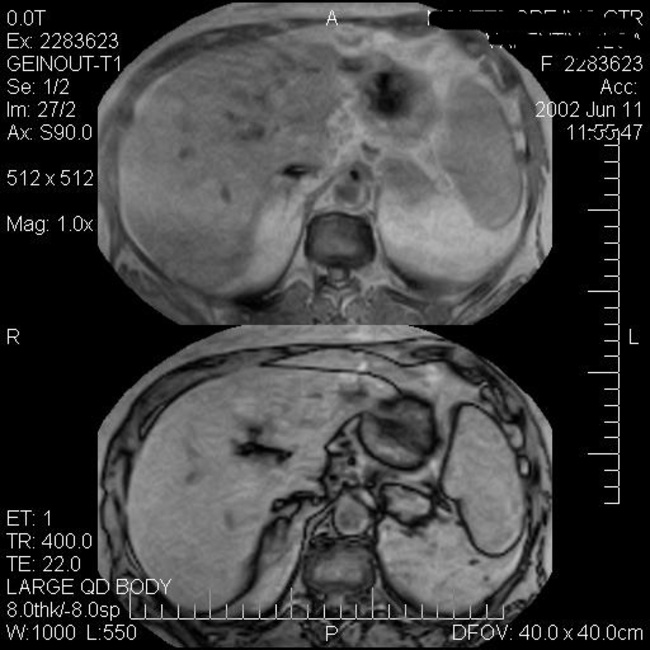
AThere is signal loss in the left adrenal nodule on the out-of-phase images, and it is therefore benign.(7%)
BThere is no signal loss in the left adrenal nodule on the out-of-phase image, and it is therefore benign.(1%)
CThere is no signal loss in the left adrenal nodule on the out-of-phase image, and it therefore might NOT be an adenoma; workup to rule out malignancy and metastasis should be done.(90%)
DThere is no signal loss in the left adrenal nodule on the out-of-phase image, confirming that this is a metastatic lesion.(2%)
Your answerC
Correct answerC. There is no signal loss in the left adrenal nodule on the out-of-phase image, and it therefore might NOT be an adenoma; workup to rule out malignancy and metastasis should be done.
Vital Concept
Benign adrenal nodules usually have fat content, and therefore demonstrate signal loss on out-of-phase MRI sequences.
Explanation
There is no signal loss in the left adrenal nodule on the out-of-phase image, and it therefore might NOT be an adenoma; workup to rule out malignancy and metastasis should be done.
The absence of signal loss in the left adrenal nodule correlates with relative absence of microscopic fat within this lesion; this lesion remains indeterminate and, given history of malignancy, adrenal metastasis cannot be excluded. The presence of microscopic fat/out-of-phase signal loss within an adrenal nodule specifically supports the diagnosis of adrenal adenoma, a benign lesion.
Incorrect Answers:
A. There is no signal loss in the left adrenal nodule.
B. Benign adrenal adenomas usually have fat within them and demonstrate signal loss on out of phase images.
D. Adrenal metastases generally do not demonstrate signal loss on out-of- phase images, but this appearance is not specific for malignancy. Tissue sampling may be necessary for definitive characterization in this case.
Vital Concept: Benign adrenal nodules usually have fat content, and therefore demonstrate signal loss on out-of-phase MRI sequences.
Q24
easy QID 18076
Correct
Which of the following is the most likely diagnosis in this 35-year-old female who has hyperthyroidism?
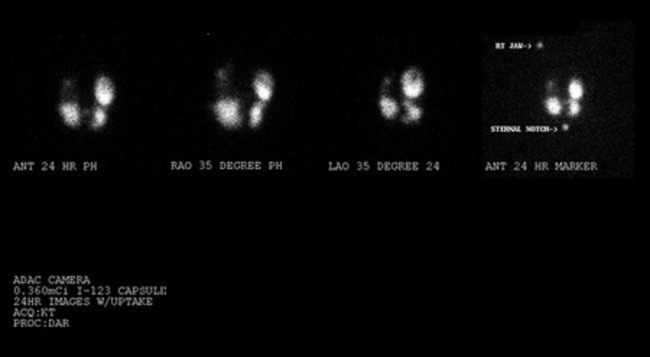
AGraves' disease(1%)
BMulti-nodular toxic goiter(96%)
CHashimoto's thyroiditis(0%)
DPapillary thyroid carcinoma(2%)
Your answerB
Correct answerB. Multi-nodular toxic goiter
Vital Concept
Multinodular goiter scintigraphy with 123I or 99mTc-pertechnetate demonstrates heterogeneous tracer distribution. Hot nodules show increased uptake and may suppress surrounding thyroid tissue. Cold nodules appear as photopenic defects with decreased or absent tracer uptake. The overall pattern contrasts with normal thyroid's homogeneous tracer distribution.
Explanation
Multi-nodular toxic goiter
Multi-nodular goiter will present as an enlarged coarse gland with multiple hot, warm, and/or cold nodules. Hyperfunctioning nodules can cause hyperthyroidism.
Incorrect Answers:
A. Graves' disease will present as diffuse increased uptake in an enlarged gland.
C. Early Hashimoto's thyroiditis can present with diffuse increased uptake. Chronic Hashimoto's can present with single or multiple areas of reduced uptake (cold spots).
D. Papillary thyroid carcinoma will more commonly present as a cold nodule on a thyroid scan but can present with a focal area of increased uptake on iodine scans and a focal area of decreased uptake on Tc-99m pertechnetate scan. The ability to concentrate iodine is the reason those cancers can be treated with I-131. In some cases, the primary is occult and the patients will present with enlarged metastatic cervical adenopathy.
Vital Concept: Multinodular goiter scintigraphy with 123I or 99mTc-pertechnetate demonstrates heterogeneous tracer distribution. Hot nodules show increased uptake and may suppress surrounding thyroid tissue. Cold nodules appear as photopenic defects with decreased or absent tracer uptake. The overall pattern contrasts with normal thyroid's homogeneous tracer distribution.
Q25
easy QID 21030
Correct
A 24-year-old female patient with chronic abdominal pain undergoes an upper GI series. Which of the following is the diagnosis?
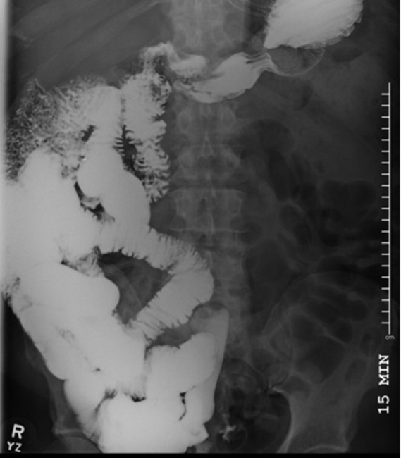
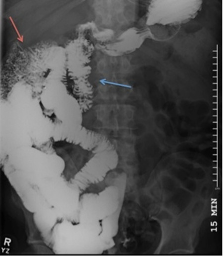
ACongenital malrotation(96%)
BCeliac sprue(3%)
CWhipple’s disease(0%)
DCrohn’s disease(0%)
EUlcerative colitis(0%)
Your answerA
Correct answerA. Congenital malrotation
Explanation
Congenital malrotation
Spot fluoroscopic image from an upper GI series with small bowel follow-through demonstrates lateralization of bowel loops, all of which are located on the patient’s right side (red arrow). The normal duodenal C-sweep is not seen, and there is no crossing of the midline by the duodenum (blue arrow). Normally during gestation, the intestinal contents protrude from the anterior abdomen and turn 270° counterclockwise before returning to the abdominal cavity. When they return, it produces the normal configuration of bowel, with the normal duodenal C-sweep and configuration of cecum, ascending, transverse, descending, and sigmoid colon. In nonrotation, which is a subtype of malrotation associated with a lower risk of volvulus, the small bowel is located predominantly on the right side of the peritoneal cavity. The colon is located on the left side. This is the appearance seen here.
Incorrect Answers:
B. Celiac sprue is a gluten-related enteropathy that produces malabsorption-related symptoms and intestinal mucosal abnormalities in patients who have a genetically predisposed sensitivity to gliadin. Fluoroscopic findings include jejuno-ileal reversal, with a decreased number of jejunal folds and an increased number of ileal folds as well as flocculation of bowel contrast related to dilutional effect of increased small bowel fluid secretions. These patients are predisposed to small bowel intussusception.
C. Whipple’s disease is a bacterial illness that produces a malabsorption syndrome. The culprit bacterium is Tropheryma whipplei, which is taken up by macrophages in the intestinal villi. This produces marked villous thickening and mesenteric adenopathy, which is fat-density. The diagnosis is confirmed by the presence of PAS-positive material from a small bowel biopsy. It is treated with long-term antibiotic therapy.
D. Crohn’s disease is characterized by discontinuous full-thickness small bowel and colonic ulceration with fistula and stricture formation. One might expect to see prominent disease in the terminal ileum as well as cobblestoning and aphthous ulceration.
E. Ulcerative colitis is characterized by confluent partial-thickness colonic ulceration with potential extension into the distal ileum via a patent ileocecal valve (backwash ileitis). The features of ulcerative colitis are not seen in this case.
Q26
easy QID 56797
Correct
What is the most appropriate description of the abnormality shown on this sagittal proton-density image of the knee?
APosterior cruciate ligament tear(2%)
BPatella alta(3%)
CBucket-handle tear of meniscus(92%)
DAbnormal marrow signal in distal femur(3%)
Your answerC
Correct answerC. Bucket-handle tear of meniscus
Explanation
Bucket-handle tear of meniscus
There is a curvilinear low-signal structure paralleling the normal posterior cruciate ligament. This is the "double PCL" sign, which has been described in the setting of bucket-handle tears of the menisci. In a bucket-handle tear, the torn inner margin of the meniscus flips medially into the intercondylar notch, resulting in the appearance shown.
Incorrect Answers:
A. The posterior cruciate ligament has a normal, low-signal, linear appearance.
B. Patella is noted in normal anatomic location.
D. There is normal-appearing red marrow in the distal femur and a small amount of red marrow in the proximal tibia as well. On this sequence, the red marrow has slightly greater signal intensity than the adjacent musculature, indicating an appropriate mixture of fat and cellularity.
Q27
hard QID 38116
Incorrect
The patient most likely has a history of which of the following states?
ATreated lymphoma(78%)
BTrauma(5%)
COsteomyelitis(1%)
DAvascular necrosis(3%)
EUntreated metastatic disease(14%)
Your answerE
Correct answerA. Treated lymphoma
Explanation
Treated lymphoma
Many tumors are treated with radiation therapy. In the acute phase of radiation osteitis, radiotracer uptake actually increases in the irradiated field as a result of inflammatory hyperemia. This increment, which peaks about 2 to 3 months after treatment, is only about 10% to 20% above baseline and may not be appreciated at the visual inspection of the images.
The late phase of radiation osteitis is characterized by uniformly decreased uptake within the radiation port, as seen here to best advantage on the posterior view (blue arrows). This pattern, which can be identified by 6 months after treatment, is usually permanent.
Incorrect Answers:
B. Most fractures are scintigraphically detectable as increased tracer uptake (not decreased uptake) within 24 hr of their occurrence. However, in elderly patients with osteopenia and unremarkable findings at initial bone scintigraphy performed within 24 hours of injury, repeat scintigraphy may be performed at 72 hours to maximize sensitivity. The minimum time for normalization of activity is 6 months after the fracture, and nearly all fractures will show normalization of activity by 2 years. Because remodeling is an ongoing process in nonaligned fractures, these fractures may never attain a normal scintigraphic appearance.
C. The classic appearance of osteomyelitis consists of focally increased bone uptake (not decreased). Abnormalities at radionuclide bone imaging reflect increased bone mineral turnover in general, not infection specifically. In the spine, the tracer uptake may be limited to the endplates or may involve the entire vertebral body.
D. Disruption of arterial supply to or obstruction of venous outflow from bone may lead to avascular necrosis. In the acute phase of vascular compromise, no radiotracer is delivered to the bone tissue. At scintigraphy, the affected part of the bone appears as a photopenic defect. After revascularization, exuberant osteoblastic repair manifests as intense radiotracer uptake. Avascular necrosis of the spine (Kummel disease) is uncommon. It occurs in elderly and osteoporotic patients and is more common in females.
E. The usual pattern of metastatic disease consists of increased radiotracer deposition in areas of osteoblastic reparative activity in response to tumor osteolysis. The presence of multiple randomly distributed areas of increased uptake of varying size, shape, and intensity is highly suggestive of bone metastases (not multilevel photopenia). Some metastases, those that are purely lytic, may show relative photopenia. However, the appearance should not be as geometric as that seen here.
Q28
hard QID 50886
Correct
Which one of the following is made in a nuclear reactor?
AI-131(50%)
BCo-57(11%)
CU-238(33%)
DTc-99m(7%)
Your answerA
Correct answerA. I-131
Vital Concept
I-131 is a fission-produced from U-235 with 2.9% yield per fission. Other common fission products in nuclear medicine include Mo-99 (for Tc-99m generators) and Sr-90 (for Y-90 generators).
Explanation
I-131
Both U-235 and Pu-239 are used in nuclear reactors, producing isotopes with neutron excess via nuclear fission. I-131, Mo-99, and Xe-133 are examples of radioisotopes produced this way. Because these radioisotopes have neutron excess, they will try to get rid of their neutrons by undergoing beta minus emission, which causes the N (neutrons) to decrease by 1 and the Z (atomic number, proton number) to increase by 1. This decay is the opposite of what happens in electron capture and positron emission. U-238 undergoes alpha-decay, releasing its energy over a much slower period.
Vital Concept: I-131 is a fission-produced from U-235 with 2.9% yield per fission. Other common fission products in nuclear medicine include Mo-99 (for Tc-99m generators) and Sr-90 (for Y-90 generators).
Q29
hard QID 43667
Incorrect
A follow up MRI is ordered based on the CT findings shown, but has not yet been performed. Of the reasonable differential considerations, you favor cholesterol granuloma. If you are correct, what best explains the expected magnetic resonance (MR) T1 signal characteristics of this finding?
AHigh cellularity(16%)
BBlood products(50%)
CSimple fluid(4%)
DMineralization(4%)
EMacroscopic fat(25%)
Your answerE
Correct answerB. Blood products
Explanation
Blood products
The computed tomography (CT) scan shows non-aggressive expansion of the petrous apex by a soft tissue mass (blue arrows). Characteristic to this location, cholesterol granuloma is expected to present with very high signal on T1-weighted MR (not shown). The high inherent T1 signal is secondary to the presence of cholesterol and paramagnetic intracellular methemoglobin, because of the tendency of these lesions to undergo recurrent hemorrhage.
Incorrect Answers:
A. High cellularity is not a characteristic of cholesterol granuloma. It would manifest on MR as restricted diffusion.
C. Simple fluid would have a dark appearance on T1.
D. Abnormal mineralization is not a feature of cholesterol granulomas. This would appear as a blooming artifact on gradient echo and susceptibility weighted sequences.
E. While cholesterol debris is present in cholesterol granulomas and contributes to their high intrinsic T1 signal, it is not the result of gross or macroscopic fat, as stated here.
Q30
moderate QID 38123
Correct
A 17-year-old male patient is undergoing treatment for acute lymphocytic leukemia (ALL). Routine blood work is performed, and their BUN and creatinine come back as 37 mg/dL and 1.9 mg/dL, respectively. A Tc99m – MAG3 exam is ordered. Which of the following is the most likely diagnosis?
AChronic renal failure(4%)
BAcute renal failure(83%)
CRenal artery stenosis(1%)
DUrinary obstruction(8%)
ENormal study(4%)
Your answerB
Correct answerB. Acute renal failure
Explanation
Acute renal failure
The mercaptoacetyltriglycine (MAG3) study demonstrates prompt cortical uptake (pink arrows) of radiotracer on the initial images, followed by delayed medullary transit (yellow arrows), and then absent excretion into the collecting system (purple arrows) on the most delayed images.
This, combined with the normal renal size and the history of treatment for ALL, is in keeping with a diagnosis of acute renal failure in the setting of tumor lysis syndrome. Tumor lysis syndrome is a group of metabolic complications that can occur after cancer treatment, most commonly in leukemia and lymphoma, caused by the breakdown of products of dying cells.
Incorrect Answers:
A. Chronic renal failure would have a similar picture with severely and proportionately reduced renal blood flow and tracer extraction. The main difference would be that the kidney would appear relatively shrunken and atrophic.
C. In renal artery stenosis there is decreased renal plasma flow. This is seen as a delayed tracer uptake (which is not present here).
D. In urinary obstruction there would be some uptake in the collecting system, as the glomeruli and renal tubules are still functioning.
E. The normal sequence of events is progressive tracer movement from the blood stream, to the renal parenchyma, to the excretory system.
Q31
easy QID 38047
Correct
Which of the following is consistent with the ACR ethical principles?
AA radiologist participates in a billing arrangement with a third-party payer with misleading language concerning the fees charged.(0%)
BA diagnostic radiologist involved in expert medical testimony accepts compensation that is contingent upon the outcome of litigation.(1%)
CA radiologist uses a colleague’s data in a scientific paper without the proper reference or attribution.(0%)
DA diagnostic radiologist with no formal training or experience in varicose vein ablation uses advertisements in which they claim they are accredited to perform these procedures.(0%)
EA radiologist works as a consultant for an equipment manufacturer and makes this financial disclosure transparent.(99%)
Your answerE
Correct answerE. A radiologist works as a consultant for an equipment manufacturer and makes this financial disclosure transparent.
Vital Concept
A radiologist who works as a consultant for an equipment manufacturer should make this financial disclosure transparent
Explanation
A radiologist works as a consultant for an equipment manufacturer and makes this financial disclosure transparent.
Explanation:
The Code of Ethics of the ACR is intended to aid the radiology community, individually and collectively, in maintaining a high level of ethical conduct. The code is not a set of laws, but a framework by which radiologists may determine the propriety of conduct in their relationship with patients, the public, colleagues, and members of allied professions.
The ACR RULES OF ETHICS state that it is proper for a diagnostic radiologist to provide a consultative opinion on radiographs and other images regardless of their origin. A radiologist who regularly interprets radiographs and other images should reasonably participate in quality assurance, technology assessment, utilization review, and other matters of policy that affect the quality and safety of patient care. Members should clearly and adequately respond to inquiries by patients regarding fees and/or any financial incentive. Thus, there is no issue with working for a private business entity, so long as the arrangement is made transparent. The diagnostic radiologist shall not accept compensation that is contingent upon the outcome of litigation...
Incorrect Answers:
A. A radiologist should not participate in a billing arrangement which misleads patients or third-party payers concerning the fees charged by the radiologist. Radiologists shall not divide radiological fees either directly or by any subterfuge.
B. In providing expert medical testimony, members should exercise extreme caution to ensure that the testimony provided is nonpartisan, scientifically correct, and clinically accurate.
C. Radiologic research must be performed with integrity and be honestly reported. Members should not claim as their intellectual property that which is not theirs. Plagiarism or the use of others’ work without attribution is unethical.
D. Members should not publicize themselves through any medium or forum of public communication in an untruthful, misleading, or deceptive manner or in a fashion demeaning to the profession.
Vital Concept: A radiologist who works as a consultant for an equipment manufacturer should make this financial disclosure transparent
Q32
hard QID 20793
Correct
Which of the following conditions is the patient most likely to have, given the appearance of this 55-year-old patient's viscera and bones?
AChronic renal failure(19%)
BDiabetes(1%)
CLeukemia(65%)
DBreast cancer(6%)
Your answerC
Correct answerC. Leukemia
Explanation
Leukemia
Two coronal CT scans of the abdomen are presented. Soft tissue windows show splenomegaly (red arrow) and ascites. Diffusely increased bone density can also be appreciated and is demonstrated even more dramatically on the bone windows (yellow arrows). These findings together are consistent with myelofibrosis. This is a chronic myeloproliferative disorder resulting in marrow fibrosis.
The majority of cases are secondary to other processes such as leukemia, lymphoma, and essential thrombocythemia, as well as nonmalignant causes (including infections, renal osteodystrophy, systemic lupus erythematosus, juvenile idiopathic arthritis, pernicious anemia, Gaucher disease, exposure to radiation, and toxins).
Incorrect Answers:
A. The appearance of two normal (non-atrophic) kidneys argues against renal failure as the etiology here.
B. There are many skeletal manifestations of diabetes, such as osteopenia, osteomyelitis, and neuropathic joints, which are not seen in this case. Diffuse marrow sclerosis is not one of them.
D. Breast cancer metastasis can be either sclerotic or lytic but would appear more focal. Splenomegaly should not be seen in breast cancer either.
Q33
easy QID 4973
Correct
A 50-year-old female with hematochezia underwent a GI bleeding scan with technetium-99m labeled red blood cells. Anterior projection static images after injection of radiopharmaceutical are shown. Where is the active hemorrhage originating from in this case?
ARectum(0%)
BHepatic flexure(1%)
CSplenic flexure(95%)
DSigmoid colon(4%)
Your answerC
Correct answerC. Splenic flexure
Vital Concept
A positive nuclear medicine GI bleeding scan shows a focal site of increased activity within the abdomen or pelvis, which progresses distally in the bowel. Since blood is an irritant to the intestines, movement of activity within the bowel loops is often rapid and may be bidirectional.
Explanation
Splenic flexure
Tagged RBC scans become positive when labeled red blood cells extravasate from damaged vessels into the bowel lumen, creating a radioactive "hot spot" at the bleeding site. The labeled red blood cells progressively move distally with bowel peristalsis—this movement over time is the key diagnostic feature distinguishing true GI bleeding from non-mobile foci of increased tracer. In this case, tracer appearing in the LUQ and progressing to the sigmoid indicates active bleeding from the splenic flexure.
Incorrect Answers:
A.B.D. Activity begins in the left upper quadrant, which is not typical for rectum, hepatic flexure or sigmoid.
Vital Concept: A positive nuclear medicine GI bleeding scan shows a focal site of increased activity within the abdomen or pelvis, which progresses distally in the bowel. Since blood is an irritant to the intestines, movement of activity within the bowel loops is often rapid and may be bidirectional.
Q34
easy QID 22636
Correct
A 16-year-old female patient presents with worsening right lower quadrant pain. Color Doppler shows no flow. Which of the following is the most likely diagnosis?
AEndometriosis(1%)
BOvarian dermoid(1%)
CHemorrhagic ovarian cyst(1%)
DOvarian torsion(98%)
EPelvic inflammatory disease(0%)
Your answerD
Correct answerD. Ovarian torsion
Vital Concept
Ovarian torsion shows enlarged ovary with peripherally dispersed follicles and heterogeneous echotexture. Key findings include lack of vascularity on color Doppler and the whirlpool sign, which appears as a hypoechoic band representing the twisted pedicle with vessels looping around the center axis.
Explanation
Ovarian torsion
The typical sonographic findings of ovarian torsion are an enlarged, hypoechoic ovary (red arrow – note the 1 cm marker in the top left of the image) with peripherally located follicles (yellow arrows) and decreased or absent internal Doppler signal (not shown here). There may be an associated spiral appearance of the adnexal vessels, related to “twisting” of the adnexa. The treatment for ovarian torsion is urgent surgical de-torsion. Congenital anomalies of the adnexa, ovarian cysts and masses, as well as iatrogenic ovarian stimulation are risk factors for the development of torsion.
Incorrect Answers:
A. Endometriosis may be difficult to detect on sonographic evaluation, but may appear as cyclical increase in size of echogenic components of hemorrhagic adnexal masses coinciding with the patient’s menstrual cycle. On MRI, the imaging finding of a cystic-appearing pelvic mass with associated fluid-fluid levels and layering hypointense material on T2-weighted imaging should suggest a diagnosis of endometrioma. Endometriomas are abnormally located endometrial tissue outside the uterine cavity and may be seen anywhere along the genital tract. They have even been found in the lungs, and they are occasionally seen along surgical incision sites after hysterectomy or other uterine surgery. They are hormonally active with cyclic bleeding, resulting in cyclic pain and scarring. MRI typically demonstrates hyperintense masses on T1-weighted imaging with variable low signal on T2-weighted imaging (“T2 shading”) depending upon hemosiderin concentration. They may have a thickened enhancing fibrous capsule.
B. Cystic teratomas, or dermoid cysts, are congenital cystic masses composed of at least two germ cell layers. In female patients, they are characteristically located in the adnexa and typically contain fat-density material on CT imaging. On sonographic imaging, they frequently demonstrate echogenic material in locations where lipid-density material is seen on CT. They characteristically may have an echogenic shadowing nodule on ultrasound, known as the “dermoid plug” or the “Rokitansky nodule.” On CT, they commonly will have a calcified focus of material that may resemble teeth. Additonally, hair and other ectodermal elements may be seen. They are benign lesions that are managed non-operatively unless they are growing or are causing symptoms.
C. Hemorrhagic ovarian cysts typically have internal soft-tissue density components due to internal blood products. On sonographic imaging, they characteristically have a lace-like appearance due to evolved fibrinous hematoma.
E. On sonographic imaging, pelvic inflammatory disease (PID) may have multiple different appearances. However, some of the more common findings are thickened, hypoechoic fallopian tubes with increased internal Doppler signal, as well as dilated fallopian tubes with internal layering mixed echogenicity fluid, representing pyosalpinx. Heterogeneously hypoechoic pelvic fluid collections may also be seen, representing pelvic abscess formation.
Vital Concept: Ovarian torsion shows enlarged ovary with peripherally dispersed follicles and heterogeneous echotexture. Key findings include lack of vascularity on color Doppler and the whirlpool sign, which appears as a hypoechoic band representing the twisted pedicle with vessels looping around the center axis.
Q35
moderate QID 21109
Correct
A 36-year-old female patient presents with persistent right upper quadrant pain after undergoing cholecystectomy approximately six months prior. An MRI is obtained, demonstrating which of the following complications?
ABiloma(1%)
BDropped gallstone(6%)
CInflamed cystic duct remnant(3%)
DCholecystoenteric fistula(2%)
ECommon bile duct stricture(87%)
Your answerE
Correct answerE. Common bile duct stricture
Vital Concept
The most common cause of benign bile duct stricture is inadvertent trauma during laparoscopic cholecystectomy. Imaging demonstrates a focally narrowed bile duct with proximal dilatation.
Explanation
Common bile duct stricture
Heavily T2-weighted coronal MRCP images demonstrate a focally narrowed common bile duct (red arrow) with proximal dilatation (green arrow). This is also seen on the coronal T2 image provided on the right. The most common cause of benign bile duct stricture is inadvertent trauma during laparoscopic cholecystectomy. This is most frequently treated with endoscopic dilatation.
Incorrect Answers:
A. Biloma may be suggested in the presence of persistent fluid collection in or around the gallbladder fossa after cholecystectomy. The presence of a biloma frequently suggests injury to the cystic duct or common bile duct in the postoperative setting. Frequently, bilomas will slowly resolve over time without treatment; however, in the setting of fever and leukocytosis, infection should be considered. In this case, percutaneous drainage may be indicated.
B. Dropped gallstones are not uncommon causes of persistent pain after cholecystectomy. If an infected gallstone is unintentionally dropped into the peritoneal cavity during cholecystectomy, there is a high likelihood for persistent inflammation at the site of the dropped stone. These cases frequently require repeat operation for retrieval.
C. Inflammation of a cystic duct remnant with or without an associated gallstone is a known cause of post-cholecystectomy syndrome and often requires repeat laparoscopic intervention for full treatment.
D. Cholecystoenteric fistulae are an uncommon late complication of severe gallstone disease, but these fistulae are important to note, as they are an uncommon cause of ongoing right upper quadrant pain and may contribute to bowel obstructions (gallstone ileus).
Vital Concept: The most common cause of benign bile duct stricture is inadvertent trauma during laparoscopic cholecystectomy. Imaging demonstrates a focally narrowed bile duct with proximal dilatation.
Q36
moderate QID 56247
Correct
A 52-year-old female presents with a change in neurologic status, and an MRI of the brain including perfusion (cerebral blood volume map shown) is obtained for follow-up. The demonstrated focal finding is new since the prior study. What is the abnormality?
AChronic infarct(3%)
BRadiation necrosis(5%)
CTumor(87%)
DAcute infarct(4%)
Your answerC
Correct answerC. Tumor
Explanation
Tumor
The images demonstrate a new enhancing abnormality with elevated relative cerebral blood volume, an indicator for tumor. Advanced neuroimaging including MR perfusion is a testable topic, and an understanding of the basics is necessary.
Incorrect Answers:
A. Chronic infarct would not enhance.
B. Radiation necrosis, while a primary alternative consideration in the differential diagnosis for the enhancing lesion, would display normal-to-decreased relative cerebral blood volume.
D. Acute infarct should not enhance nor would it demonstrate these perfusion characteristics.
Q37
moderate QID 47074
Correct
Which of the following is expected in cystadenocarcinoma but not cystadenoma?
AHyperattenuating contents(0%)
BFluid attenuation(1%)
CEnhancing septations(13%)
DSolid and nodular component(85%)
EFine calcifications(1%)
Your answerD
Correct answerD. Solid and nodular component
Vital Concept
The old terms biliary cystadenoma versus cystadenocarcinoma are now understood as a spectrum within mucinous cystic neoplasm from low-grade dysplasia to high-grade dysplasia to mucinous cystic neoplasm with invasive carcinoma, with solid nodular components suggesting malignant transformation.
Explanation
Solid and nodular component
The primary distinguishing characteristic of cystadenocarcinoma is a solid and nodular enhancing component (red arrow).
The remaining features are consistent with biliary cystadenoma and its malignant counterpart cystadenocarcinoma, which are uncommon cystic liver neoplasms.
These lesions occur predominantly in middle-aged patients and are more common in women. Because cystadenomas have the potential to transform into a biliary cystadenocarcinoma, they are generally either excised if symptomatic or followed by imaging to evaluate for the development of any solid enhancing tissue.
Updated nomenclature will be transitioning the term biliary cystadenoma to mucinous neoplasm of the liver (MCN-L), and the cystadenocarcinoma will be referred to as mucinous neoplasm of the liver (MCN-L) with invasive features.
Incorrect Answers:
A. and B. Both cystadenomas and cystadenocarcinomas may contain either simple fluid or hemorrhagic/ proteinaceous debris, giving them a hyperdense appearance on CT.
C. They may be either unilocular or multilocular, both with the potential for enhancing septations.
E. Fine mural calcification can be seen in both.
Vital Concept: The old terms biliary cystadenoma versus cystadenocarcinoma are now understood as a spectrum within mucinous cystic neoplasm from low-grade dysplasia to high-grade dysplasia to mucinous cystic neoplasm with invasive carcinoma, with solid nodular components suggesting malignant transformation.
Q38
hard QID 50883
Incorrect
Which of the following is not true about 18F-Fluorodeoxyglucose (18F-FDG)?
AIt is used for imaging tumors in oncology, where PET-CT images are usually analyzed in terms of standardized uptake values (SUVs).(14%)
B18F-FDG is taken up by cells, phosphorylated by tyrosine kinase, and retained by tissues with high metabolic activity, such as most types of malignant tumors.(39%)
CFDG-PET has been approved for use in evaluation of Alzheimer's disease.(38%)
DFDG-PET can be used for the staging of non-Hodgkin lymphoma.(9%)
Your answerC
Correct answerB. 18F-FDG is taken up by cells, phosphorylated by tyrosine kinase, and retained by tissues with high metabolic activity, such as most types of malignant tumors.
Vital Concept
Hexokinase phosphorylates fluorodeoxyglucose (FDG) after cellular uptake, trapping it as FDG-6-phosphate. The degree of FDG retention in cells directly reflects hexokinase activity and thus local glycolytic rate and is the basis for FDG PET imaging.
Explanation
18F-FDG is taken up by cells, phosphorylated by tyrosine kinase, and retained by tissues with high metabolic activity, such as most types of malignant tumors.
18F-FDG has been approved by the US Food and Drug Administration for clinical application in positron emission tomography (PET) imaging, and it is routinely used for many applications, including the assessment of glucose metabolism in the heart, lungs, and brain. It is also used for imaging tumors in oncology, where PET-CT images are usually analyzed in terms of standardized uptake values (SUVs). 18F-FDG is taken up by cells, phosphorylated by hexokinase (not tyrosine kinase), and retained by tissues with high metabolic activity, such as most types of malignant tumors.
As a result, FDG-PET can be used for diagnosis, staging, and monitoring treatment of cancers, particularly Hodgkin disease, non-Hodgkin lymphoma, colorectal cancer, breast cancer, melanoma, and lung cancer, among others. FDG-PET has also been approved for use in evaluation of Alzheimer's disease. The application of 18F-FDG in the early detection of malignant tumors and treatment follow-up is extremely wide, and many clinical trials are in progress.
Incorrect Answers:
A. C. D. As discussed above, these are all true statements.
Vital Concept: Hexokinase phosphorylates fluorodeoxyglucose (FDG) after cellular uptake, trapping it as FDG-6-phosphate. The degree of FDG retention in cells directly reflects hexokinase activity and thus local glycolytic rate and is the basis for FDG PET imaging.
Q39
easy QID 39312
Correct
Which of the following MR safety zones contains the MR scanner magnet room?
AZone I(1%)
BZone II(0%)
CZone III(1%)
DZone IV(97%)
EZone V(1%)
Your answerD
Correct answerD. Zone IV
Explanation
Zone IV
There are several safety measures involved in the use of magnetic resonance (MR) scanners, primarily due to the scanners’ strong magnetic field. One safety measure is the zone classification system that signifies progressive monitoring and restriction of entry into higher numbered, more controlled zones. Zone IV is the highest of the four MR safety zones. Zone IV not only denotes the location of the MR scanner magnet room, which is accessible only under the direct observation of MR personnel. Zone IV should be clearly demarcated and marked as potentially hazardous due to the strong magnetic field.
Incorrect Answers:
A. Zone I signifies unrestricted access. It is the area through which patients and personnel enter the controlled MR environment.
B. Zone II is the interface between the unrestricted access of Zone I and the tightly controlled access to Zones III and IV. Zone II can be used to greet patients, obtain histories, and screen patients for safety issues. Patients in Zone II should be under the supervision of MR personnel.
C. Zone III is the area where there is potential danger of serious injury or death from interaction between unscreened people or ferromagnetic objects and the magnetic field of the scanner. The scanner control room is typically in Zone III. Access to Zone III must be strictly restricted and under the supervision of MR personnel with physical restrictions such as locks or passkey systems.
E. Zone V does not currently exist within the MR safety zone classification system. The highest, most controlled level in the classification system is Zone IV.
Q40
QID 5085
Correct
Radiograph of the hands depicts diffuse periarticular osteopenia, degenerative change of the first carpometacarpal joints, subcutaneous calcifications and resorptive changes of all of the distal phalanges with 'pencil in cup' deformities seen of some. Which of the following is the most likely diagnosis?
APrimary hyperparathyroidism(12%)
BScleroderma(67%)
CFrostbite injury(18%)
DScorpion envenomation(1%)
EMultiple vascular malformations(2%)
Your answerB
Correct answerB. Scleroderma
Vital Concept
Osteopenia with subcutaneous calcification and 'pencil in cup' deformity of phalanges should make one think of scleroderma.
Explanation
Scleroderma
The most likely diagnosis is scleroderma, also known as progressive systemic sclerosis. Scleroderma is an incompletely understood immune-mediated collagen vascular disease. Distal phalangeal bone resorption, or acro-osteolysis, affects 40% to 80% of patients with scleroderma and is likely caused by chronic autoimmune microangiopathy and digital ischemia, often resulting in 'pencil in cup' deformity. Degenerative change of the carpometacarpal joints with radial subluxation is also commonly seen.
Incorrect Answers:
A. This is a reasonable alternative to the correct diagnosis and should be mentioned in the differential diagnosis. Hyperparathyroidism is the most common cause of acro-osteolysis and mass-like soft tissue calcifications are not uncommon. However, the bone resorption of hyperparathyroidism is more generalized, affecting trabecular, subperiosteal, and subchondral bone. Osteolysis, in this case, primarily involves the distal phalanges and favors a different etiology.
C. Frostbite injury is a potential cause of acro-osteolysis, but in the majority of cases, the thumb is spared due to protective tucking of the thumb into the palm. Additionally, the subcutaneous calcifications in this case are not characteristic of a frostbite injury.
D. Scorpion envenomation is a rare cause of acro-osteolysis but would not account for the soft tissue calcifications in this case.
E. Multiple vascular malformations, specifically venous malformations or mixed malformations with venous components, may be visible on radiographs due to calcification of associated phleboliths. Phleboliths, however, are generally small, and vascular malformations would not account for the focal acro-osteolysis seen in this case.
Vital Concept: Osteopenia with subcutaneous calcification and 'pencil in cup' deformity of phalanges should make one think of scleroderma.
Q41
easy QID 46851
Correct
A 71-year-old male patient is referred for an abdominal CT based on symptoms of one month of increasing postprandial abdominal pain. Which of the following is the diagnosis?
ASuperior mesenteric vein thrombosis(96%)
BSuperior mesenteric artery thrombosis(1%)
CInferior mesenteric vein thrombosis(1%)
DInferior mesenteric artery thrombosis(0%)
EPortal vein thrombosis(1%)
Your answerA
Correct answerA. Superior mesenteric vein thrombosis
Vital Concept
Superior mesenteric vein thrombosis presents with nonspecific symptoms requiring high clinical suspicion. CT angiography is diagnostic, and immediate anticoagulation dramatically reduces mortality compared to delayed treatment.
Explanation
Superior mesenteric vein thrombosis
The axial CT shows high-density clot expanding the superior mesenteric vein (SMV) (red arrow). Note the relative density of the SMV to the IVC. The imaging findings and clinical presentation are that of superior mesenteric vein thrombosis. Mesenteric vein thrombosis is uncommon relative to arterial thrombosis, accounting for only 5 to 15% of all cases of acute mesenteric ischemia. It presents as acute or subacute abdominal pain, which is often postprandial. Underlying causes include hypercoagulable states and pancreatitis. If untreated, it can lead to bowel ischemia and infarction, although small bowel necrosis does not often occur, presumably due to persistent arterial supply and some venous drainage via collaterals. The mortality rate is approximately 18% from the SMV alone and climbs to 76% when the portal vein is also involved.
Incorrect Answers:
B. and D. Clots involving the arterial system typically present much more suddenly, with symptoms of acute abdomen secondary to bowel ischemia and infarction. CT findings of ischemia may be present, including bowel dilatation and hyper- or hypoperfusion, as may findings of ischemia such as pneumatosis and portal venous gas.
C. and E. The clot shown here does not involve the portal vein or the inferior mesenteric vein.
Vital Concept: Superior mesenteric vein thrombosis presents with nonspecific symptoms requiring high clinical suspicion. CT angiography is diagnostic, and immediate anticoagulation dramatically reduces mortality compared to delayed treatment.
Q42
easy QID 48129
Correct
Which of the following is depicted below?
ANormal mineralization(0%)
BUnremarkable joint space(0%)
CRadiographic calcification in hyaline and/or fibrocartilage(97%)
DOsteoporosis(1%)
Your answerC
Correct answerC. Radiographic calcification in hyaline and/or fibrocartilage
Vital Concept
Chondrocalcinosis on knee radiographs appears as punctate and linear calcifications within the meniscal fibrocartilage and articular cartilage, representing calcium pyrophosphate deposition disease, with lateral compartment involvement more common than medial.
Explanation
Radiographic calcification in hyaline and/or fibrocartilage
Chondrocalcinosis refers to mineralization of cartilage, typically fibrocartilage in the menisci of the knee or TFCC of the wrist. Typically, the crystals deposited are of CPPD, but other crystalline calcium compounds are possible. Calcium pyrophosphate dihydrate (CPPD) crystal deposition disease is a common disorder and the most common crystal arthropathy. It typically affects the middle-aged and elderly populations. The clinical picture varies from the pseudogout syndrome to asymptomatic joint disease. The radiographic picture also varies from chondrocalcinosis without arthropathy to severe arthropathy. Chondrocalcinosis is the deposition of CPPD crystals into fibrous and/or hyaline cartilage. CPPD crystals may also deposit in synovium capsules, tendons, and ligaments. It is seen most frequently in the knee, pubic symphysis, and wrist. The radiographic features of CPPD crystal deposition include radiographic calcification in hyaline and/or fibrocartilage (chondrocalcinosis), normal mineralization, uniform joint space loss, and subchondral cysts, which tend to be large.
Vital Concept: Chondrocalcinosis on knee radiographs appears as punctate and linear calcifications within the meniscal fibrocartilage and articular cartilage, representing calcium pyrophosphate deposition disease, with lateral compartment involvement more common than medial.
Q43
hard QID 37649
Incorrect
A provider is evaluating an incidentally detected pulmonary nodule seen on a chest computed tomography (CT) performed on a 56-year-old male for unrelated symptoms. Which of the following correctly states the typical intrinsic spatial resolution of positron emission tomography (PET)?
A0-1mm(2%)
B1-2mm(9%)
C4-5mm(35%)
D7-8 mm(24%)
Your answerD
Correct answerC. 4-5mm
Explanation
4-5mm
Fluorodeoxyglucose (FDG) positron emission tomography (PET) evaluation of pulmonary nodule was one of the first indications of the modality. The increased use of CT has led to a substantial increase in the number of incidentally detected pulmonary nodules. The conventional workup of an indeterminate nodule is either biopsy or serial CT follow-up for 2 years, with those nodules increasing in size presumed to be suspicious and often going on to biopsy.
FDG-PET has proven to be an accurate method to differentiate benign from malignant nodules and decrease biopsy of benign lesions. The typical spatial resolution of PET/CT technology is 4-5mm (previous acquisition techniques were around 7-8mm).
The greater motion occurring with tachypnea or in the more mobile lung bases may accentuate volume averaging. Additionally, not all lung cancers are FDG avid: carcinoid and pulmonary adenocarcinoma in situ (formerly bronchoalveolar cell carcinoma) are well-known exceptions.
Incorrect Answers:
A. B. D. As discussed above, these are incorrect answer choices.
Q44
easy QID 22571
Correct
A 3-month-old male patient presents with seizures. Which of the following is the diagnosis?
ASchizencephaly(1%)
BLissencephaly(67%)
CPolymicrogyria(1%)
DBand heterotopia(4%)
Your answerB
Correct answerB. Lissencephaly
Vital Concept
Lissencephaly demonstrates a smooth brain surface with thick cortex and thin subcortical white matter. A characteristic circumferential high T2 signal band appears in the parieto-occipital cortex representing a sparse cell zone. Complete lissencephaly shows agyria while incomplete forms demonstrate parieto-occipital agyria with frontotemporal pachygyria.
Explanation
Lissencephaly
Lissencephaly is a disorder of cortical formation related to failure of neuronal migration. The typical imaging appearance is that of an “hourglass” cerebral shape (blue arrows) with undergyration and thick, bland cortical ribbon (yellow arrows) and prominent vessels (red arrow) within the shallow sulci and Sylvian fissures. It may be acquired related to CMV infection, toxin exposure, or related to genetic mutations. Lack of neuronal migration leads to formation of an abnormal four-layer cortex. Patients most commonly present with developmental delay and seizures.
Incorrect Answers:
A. Schizencephaly is characterized by gray matter lined clefts extending through the brain parenchyma, communicating with the ventricular system. They are acquired in utero and may be the result of infection, vascular injury, toxin exposure, or trauma. Most frequently they are found in the frontal and/or parietal lobes and may be bilateral. They may be characterized as “open lip” or “closed lip” based on the width of the cleft. Frequently they are associated with cortical dysplasias in the region of the abnormality, such as pachygyria, polymicrogyria, or gray matter heterotopias.
C. Polymicrogyria is a cortical dysplasia consisting of abnormal distribution of neuronal tissue that produces an abnormally high number of small, shallow sulci. It may be confused with pachygyria because the high number of small gyri and sulci may appear fused on lower resolution sequences, giving the illusion of abnormally thick, broad gyri. It may be associated with areas of schizencephaly. It is frequently associated with intrauterine infection.
D. Band heterotropia is a form of diffuse grey matter heterotopia affecting almost only women. On imaging, this condition is characterized by a band of grey matter located deep to and roughly paralleling the cortex with either with normal or pachygyric overlying cortex.
Vital Concept: Lissencephaly demonstrates a smooth brain surface with thick cortex and thin subcortical white matter. A characteristic circumferential high T2 signal band appears in the parieto-occipital cortex representing a sparse cell zone. Complete lissencephaly shows agyria while incomplete forms demonstrate parieto-occipital agyria with frontotemporal pachygyria.
Q45
easy QID 2878
Incorrect
A 6-month-old female is brought to the emergency department for fussiness. The parents report that the child was being carried by her mother and the mother tripped and the child fell from a height of 4 feet. Radiography was performed. The clinician in the emergency department reports he does not suspect non-accidental trauma from the family and will not report the case to Child Protective Services. Which of the following is true?
AIt is the ED doctor's patient so they may choose not to report.(2%)
BThe case must be reported by the radiologist to Child Protective Services.(92%)
CThe radiologist should call the ED nurse to discuss the case.(5%)
DThe radiologist is criminally protected because the ED doctor vouches for the family.(0%)
EThe radiologist is civilly protected because the ED doctor vouches for the family.(1%)
Your answerA
Correct answerB. The case must be reported by the radiologist to Child Protective Services.
Vital Concept
The radiologist's role includes alerting clinicians to specificity of imaging findings and providing guidance when findings are concerning for abuse. Multiple healing fractures in a young infant with an implausible history represent a classic presentation requiring immediate CPS involvement to ensure child safety and proper investigation.
Explanation
The case must be reported by the radiologist to Child Protective Services.
Healthcare providers are legally mandated to inform child protective services in cases where there is a reasonable suspicion of child abuse. In this case there is a healing left femoral shaft fracture as evidenced by periostitis and healing right radial and ulnar fractures. Multiple fractures are unexpected in a non-ambulating 6-month-old and non-accidental trauma must be considered. The abuser may be from outside the family, such as a babysitter or at daycare, so trusting the family is not adequate to defer a referral to Child Protective Services. All states have mandated reporter laws for suspected child abuse, and a radiologist is a mandated reporter. Failure to report leaves the patient susceptible to continued abuse or death if he or she is returned to the unsafe environment. This may also leave the radiologist open to criminal or civil liability. There are multiple radiologic findings described in non-accidental trauma, for example, metaphyseal corner fractures, fractures of multiple ages, cerebral edema and duodenal hematoma, for which non-accidental trauma must at least be raised as a possibility to trigger further investigation prior to return of the child to his or her home. A skeletal survey is a useful tool to identify occult injuries in children younger than 2-years-old.
Vital Concept: The radiologist's role includes alerting clinicians to specificity of imaging findings and providing guidance when findings are concerning for abuse. Multiple healing fractures in a young infant with an implausible history represent a classic presentation requiring immediate CPS involvement to ensure child safety and proper investigation.
Q46
easy QID 56253
Correct
A 63 year-old male presents to the emergency department with headache. Computed tomography (CT) of the brain is performed and displays the following results. What is the diagnosis?
ACentral neurocytoma(2%)
BSubependymal nodule(2%)
CColloid cyst(96%)
DNeurocysticercosis(0%)
Your answerC
Correct answerC. Colloid cyst
Explanation
Colloid cyst
There is a small, well-circumscribed, hyperdense lesion at the right foramen of Monro. This is pathognomonic for a colloid cyst. There is no abnormal enlargement of the ventricles in this case; however, the concern is for acute obstructing hydrocephalus, which can be fatal. Computed tomography (CT) provides the characteristic appearance of these lesions, and magnetic resonance imaging (MRI) can be more heterogeneous.
Incorrect Answers:
A. Central neurocytoma is a heterogeneous lesion that classically arises from the septum pellucidum. These can also produce hydrocephalus secondary to obstruction.
B. Subependymal nodules are seen in the setting of tuberous sclerosis. They can contain calcifications that can appear hyperdense, but do not have the appearance of the lesion in this case.
figure "CT brain showing subependymal nodules.":
CT showing subependymal nodules.
CT brain showing subependymal nodules.
D. Neurocysticercosis is an infectious etiology that produces intracranial lesions that transition through 4 stages. The lesions have variable appearance but are typically hypodense and can have surrounding parenchymal edema depending on the stage of the disease. The lesions in the chronic stage calcify (nodular calcified stage), which produces hyperdensity, but they appear different from the lesion pictured here.
Q47
easy QID 12301
Correct
Which of the following is the diagnosis in this 40-year-old asymptomatic male?
AFahr's disease(98%)
BCerebellar hemorrhage(1%)
CCerebellar tumor(0%)
DChronic cerebellar infarcts(2%)
Your answerA
Correct answerA. Fahr's disease
Vital Concept
Bilateral cerebellar calcifications in Fahr's syndrome represent abnormal calcium phosphate deposition in the dentate nuclei and cerebellar cortex. These calcifications occur alongside basal ganglia involvement and manifest with cerebellar dysfunction including ataxia and speech difficulties.
Explanation
Fahr's disease
Fahr's disease (primary familial brain calcification) is an inherited disorder of intracranial calcifications. Calcifications usually affect the basal ganglia (mainly globus pallidus), thalami, and cerebellar dentate nuclei bilaterally, as shown here. Usually, patients are asymptomatic till the age of 50. Symptoms might include extrapyramidal disturbance, psychosis, cognitive impairment, and dementia.
Incorrect Answers:
B. The dentate nuclei demonstrate calcifications and not hemorrhages.
C. It is very unusual to have bilateral symmetric calcified cerebellar tumors.
D. Chronic infarcts will present as areas of volume loss and encephalomalacia rather than calcifications.
Vital Concept: Bilateral cerebellar calcifications in Fahr's syndrome represent abnormal calcium phosphate deposition in the dentate nuclei and cerebellar cortex. These calcifications occur alongside basal ganglia involvement and manifest with cerebellar dysfunction including ataxia and speech difficulties.
Q48
moderate QID 2843
Incorrect
Ten days after undergoing a dental cleaning, a 41-year-old male presented to the emergency department with headache, decreased consciousness, and right-sided weakness. Computed tomography (CT) revealed an abnormality in the left frontal lobe and a magnetic resonance image (MRI) was performed. T1 post-contrast, fluid attenuated inversion recovery (FLAIR) and 2 diffusion-weighted (DW) images are shown below. Which of the following is most accurate regarding the diagnosis?
AA cerebral abscess does not demonstrate restricted diffusion.(0%)
BA cerebral abscess can be excluded if the cerebrospinal fluid (CSF) gram stain and cultures are negative.(6%)
CVentriculitis is not present in this case.(4%)
DA cerebral abscess wall may be thinner on the side facing the ventricle.(78%)
EDifferential diagnosis does not include metastasis.(12%)
Your answerB
Correct answerD. A cerebral abscess wall may be thinner on the side facing the ventricle.
Vital Concept
Brain abscesses show thinner walls on the ventricular side, making this the most vulnerable site for rupture and subsequent ventriculitis.
Explanation
A cerebral abscess wall may be thinner on the side facing the ventricle.
This is a case of cerebral abscess demonstrating characteristic rim enhancement, central restricted diffusion, and surrounding vasogenic edema. The abscess wall is characteristically thinner on the ventricular side due to reduced vascular supply, a feature likely associated with rupture of this thinner wall into the nearby ventricle. The associated ventriculitis, as seen in this case, allows infection to spread throughout CSF spaces and significantly worsens prognosis.
The combination of rim enhancement, restricted diffusion, and ventricular involvement in this case helps distinguish abscess from other ring-enhancing lesions.
Incorrect answers:
A. The content of the abscess (as well as pus released into the ventricle or as a subdural empyema) demonstrates restricted diffusion.
B. Sterile cultures and a negative gram stain do not rule out abscess, as this is frequently seen if the abscess has not ruptured into a space containing CSF.
C. A brain abscess may be complicated by ventriculitis, as in this case, where the abscess has ruptured into the left frontal horn. There is layering-restricted diffusion material within the occipital horns on DWI images, consistent with pus.
E. There is a broad differential diagnosis for cerebral ring-enhancing lesions including abscess, metastasis, glioma, demyelination, infarct, hematoma, and radiation necrosis.
Vital Concept: Brain abscesses show thinner walls on the ventricular side, making this the most vulnerable site for rupture and subsequent ventriculitis.
Q49
moderate QID 2762
Correct
Which of the following statements is true concerning the imaged gastric band, in reference to the phi angle?
AThe band is in an appropriate position.(5%)
BThe long axis of the band is malpositioned and should form an acute angle with the long axis of the upper spine.(87%)
CThe long axis of the band is malpositioned and should form an obtuse angle with the long axis of the upper spine.(6%)
DThe long axis of the band is malpositioned and should parallel the long axis of the spine.(1%)
Your answerB
Correct answerB. The long axis of the band is malpositioned and should form an acute angle with the long axis of the upper spine.
Vital Concept
The drawing below shows how the phi angle is measured to determine whether a gastric band is correctly positioned. The phi angle is the angle formed by the profile of the gastric band and the vertical axis of the spine on frontal views. If the band is correctly positioned, the phi angle will be between 4° and 58°. Note that the connector tube is not visible because an older model of the REALIZE system was used in this patient.
Explanation
The long axis of the band is malpositioned and should form an acute angle with the long axis of the upper spine.
The angle formed between the long axis of the band and the upper spinal column should be between 4° and 58°. The gastric band should be positioned approximately 5 cm below the left hemidiaphragm and should have a rectangular appearance on AP radiographs because its anterior and posterior aspects are superimposed.
The image shows a gastric band in a near-horizontal position, forming an angle with the spine close to 90°, indicating band slippage.
Incorrect Answers:
A. C. D. As discussed above, these are untrue statements.
Vital Concept: The drawing below shows how the phi angle is measured to determine whether a gastric band is correctly positioned. The phi angle is the angle formed by the profile of the gastric band and the vertical axis of the spine on frontal views. If the band is correctly positioned, the phi angle will be between 4° and 58°. Note that the connector tube is not visible because an older model of the REALIZE system was used in this patient.
Q50
easy QID 56290
Correct
A 49-year-old male with no past medical history is referred for an MRI of the pelvis, as part of an evaluation for difficulty in passing stool. A sagittal, T1-weighted image from an MRI examination of the pelvis is shown above. Which of the following is the most likely diagnosis?
APaget’s disease(1%)
BNeuroblastoma(2%)
CChordoma(97%)
DTuberculosis(0%)
Your answerC
Correct answerC. Chordoma
Explanation
Chordoma
The image demonstrates a large soft tissue mass arising from the sacrum, extending in the pre-sacral space, presumably involving the rectum, accounting for the patient’s symptoms. In adult patients, the most common sacral masses include chordoma, chondrosarcoma, and plasmacytoma (isolated form of multiple myeloma).
Incorrect Answers:
A. Paget disease is not associated with soft tissue.
B. Neuroblastoma is found in the neonatal and early pediatric population and can occur anywhere within the body, including the sacrum.
D. Tuberculosis is a common cause of discitis and osteomyelitis in the developing world. This can result in the formation of paraspinal and epidural abscesses. In the case shown here, there is a sacral and pre-sacral mass, not a fluid collection or disc space/bony abnormality to suggest discitis/osteomyelitis.
Q51
easy QID 48135
Correct
Which of the following is the correct diagnosis in this 43-year-old female patient with neck pain?
Os odontoideum is a well-corticated ossicle superior to a small odontoid process with a larger gap than seen in odontoid fractures, often associated with anterior C1 arch hypertrophy and likely resulting from childhood trauma.
Explanation
Os odontoideum
The sagittal cervical spine MRIs show a well-corticated ossific fragment (red arrow) adjacent to a hypoplastic dens (blue arrow). This is the appearance of an os odontoideum.
Although it was originally thought to be a congenital lesion due to failure of the center of ossification of the dens to fuse with the body of C2, it may actually represent an unrecognized fracture through the C2/dens growth plate in pediatric life. The level of mobility is below the transverse ligament and it thus results in abnormal mobility of the dens with respect to C2.
Incorrect Answers:
A. An acute dens fracture would not have smooth or well-corticated margins and would show edema and potentially epidural hemorrhage.
C. The cervical spine is frequently involved in rheumatoid arthritis and is characterized by erosion of the dens, atlantoaxial subluxation, atlantoaxial impaction (cranial settling), and erosion and fusion of uncovertebral and facet joints.
D. Calcium pyrophosphate dihydrate crystal deposition disease (CPPD) arthropathy often affects the dens. Aside from ligamentous and synovial calcifications, one would expect to see irregularity of the tip of the dens, or the so-called crowned dens appearance.
E. Congenital cervical canal stenosis refers to a narrowing of the spinal canal, nerve root canals, or intervertebral foramina of the cervical spine. Historically, the standard method of evaluating cervical canal stenosis was the sagittal diameter in millimeters, using various cut-offs. Later, a ratio was introduced to reduce the inter-and intra-observer error caused by variance in magnification and landmarking. The Torg-Pavlov ratio describes the diameter of the cervical canal to the width of the cervical body, with a ratio of < 0.8 on the lateral view taken as an indication of cervical stenosis.
Vital Concept: Os odontoideum is a well-corticated ossicle superior to a small odontoid process with a larger gap than seen in odontoid fractures, often associated with anterior C1 arch hypertrophy and likely resulting from childhood trauma.
Q52
QID 9580
Correct
What is the likely etiology of the finding(s) seen on the images shown below in a 37-year-old asymptomatic female?
AAcute traumatic fracture in childhood(9%)
BRepeated microtrauma leading to stress fracture(88%)
CLigamentum flavum sprain injury(1%)
DDegenerative disc disease(2%)
Your answerB
Correct answerB. Repeated microtrauma leading to stress fracture
Vital Concept
The likely etiology of spondylolysis at L5 is repeated microtrauma, leading to a stress fracture with non-union.
Explanation
Repeated microtrauma leading to stress fracture
Bilateral lower lumbar pars stress fractures occur because the L4-L5 and L5-S1 levels experience the highest biomechanical stress during spinal movement. These levels bear maximum load during repetitive flexion, extension, and rotational activities. Sports involving balanced multidirectional movements create symmetric stress patterns affecting both sides equally. The pars interarticularis at these levels represents the weakest structural point where repetitive forces exceed the bone's adaptive capacity. This results in bilateral stress injury patterns in 94% to 96% of cases occurring at L3-L5 levels.
Incorrect Answers:
A. This is stress fracture with non-union which is associated with chronic micro-trauma.
C. Ligamentum flavum sprain injury occurs in case of acute trauma.
D. Stress fracture or bilateral spondylolysis rarely occurs in degenerative disc disease.
Vital Concept: The likely etiology of spondylolysis at L5 is repeated microtrauma, leading to a stress fracture with non-union.
Q53
easy QID 18064
Correct
A 56-year-old female with history of deep venous thrombosis (DVT) and recent fall presents with acute onset of right thigh pain, swelling and discoloration. Which of the following is the most likely diagnosis given the imaging findings?
ASoft tissue sarcoma of the quadriceps muscle(3%)
BIntramuscular hemorrhage(92%)
CPostphlebitic syndrome(6%)
DAcute muscle edema(0%)
Your answerB
Correct answerB. Intramuscular hemorrhage
Vital Concept
Fluid-fluid levels (hematocrit effect) show linear separation of cellular and liquid blood components, representing a highly sensitive sign of coagulopathic hemorrhage rather than exclusively traumatic etiology. This pattern strongly suggests a component of anticoagulation-related bleeding.
Explanation
Intramuscular hemorrhage
The images demonstrate large intramuscular hematoma involving the quadriceps musculature, predominantly the vastus lateralis and the vastus intermedius. There are multiple fluid-fluid levels with the blood of different ages. The history of recent DVT should hint toward recent anticoagulation. Patients on anticoagulation are at increased risk of intramuscular hemorrhage after trauma, even minor. Notice also the subcutaneous hematomas.
Incorrect Answers:
A. Soft tissue sarcoma will be more infiltrative and ill-defined. Enhancement is typical. Hemorrhage can occur but usually doesn't give the picture of multiple fluid-fluid levels in this case, which is more typical of anticoagulation bleed. Also, the presentation tends to be more chronic and bone involvement can be seen.
C. In postphlebitic syndrome, the muscles are usually spared. It is mainly a clinical diagnosis. On imaging, chronic subcutaneous edema and thickening can be seen.
D. Edema is probably present in this case; however, it is not the main finding.
Vital Concept: Fluid-fluid levels (hematocrit effect) show linear separation of cellular and liquid blood components, representing a highly sensitive sign of coagulopathic hemorrhage rather than exclusively traumatic etiology. This pattern strongly suggests a component of anticoagulation-related bleeding.
Q54
easy QID 2671
Correct
A 20-year-old female presents with a palpable breast abnormality. Which of the following is the best next step in management?
AFollow up in 6 months(1%)
BMammogram(2%)
CUltrasound(98%)
DBiopsy(0%)
Your answerC
Correct answerC. Ultrasound
Vital Concept
Breast ultrasound (U/S)is the preferred method of evaluation of a palpable breast mass in a woman under 30. If breast U/S identifies a solid lesion with sonographic features suggestive of a fibroadenoma (ie, oval circumscribed hypoechoic mass), this may be assessed as BI-RADS 3 lesion that is probably benign. Repeat U/S imaging in 6 months is a reasonable option in lieu of biopsy for a BI-RADS-3 lesion.
Explanation
Ultrasound
The most common cause of a palpable breast lump in in patients under 30 is fibroadenoma. Fibroadenomas result from excessive proliferation of connective tissue. They are hormonally sensitive and commonly enlarge in pregnancy and involute during menopause.
On mammography, a fibroadenoma typically appears as a well-circumscribed discrete mass and may contain popcorn calcification. On ultrasound (US), they typically appear as a well-circumscribed, ovoid, homogeneous hypoechoic mass and sometimes have a thin hypoechoic rim (pseudocapsule). They may have gentle lobulations or echogenic striations.
An ultrasound examination is the method of choice in the evaluation and follow-up of fibroadenomas in younger patients. The characteristic sonographic appearance of a fibroadenoma is an ovoid smooth solid mass, narrower in the anteroposterior diameter than the transverse diameter, with even, low-level internal echoes.
Fibroadenomas are considered BI-RADS (Breast Imaging-Reporting and Data System) 3 lesions and are probably benign. Patients may choose immediate biopsy over imaging surveillance as a management option for BI-RADS 3 probably benign lesions, although six-month repeat US imaging is a reasonable option in lieu of biopsy,
Incorrect Answers:
A.
Follow-up is not recommended initially, but for patients with a benign biopsy. UpToDate suggests repeating clinical exams and imaging every six months for two years, and if stable, patients may return to routine screening after that. Biopsy-proven benign masses that change clinically or radiographically, such as increasing in size on follow-up examinations, should be reevaluated and excised
B.
Diagnostic imaging is indicated to assess the breast mass. Ultrasound is preferred to mammography in women under 30 because most benign breast lesions in young patients are not visualized on mammography and the incidence of breast cancer in young patients is less than 1 percent. Limited radiation exposure occurs with mammography but there is no radiation exposure with ultrasound.
D.
Indications for biopsy include an enlarging lesion, atypical sonographic characteristics such as heterogeneous echotexture, and size > 2.5 centimeters, in the absence of prior studies.
Vital Concept: Breast ultrasound (U/S)is the preferred method of evaluation of a palpable breast mass in a woman under 30. If breast U/S identifies a solid lesion with sonographic features suggestive of a fibroadenoma (ie, oval circumscribed hypoechoic mass), this may be assessed as BI-RADS 3 lesion that is probably benign. Repeat U/S imaging in 6 months is a reasonable option in lieu of biopsy for a BI-RADS-3 lesion.
Q55
moderate QID 2831
Correct
A 32-year-old female presents to the emergency department with maxillary pain, nasal congestion, and nasal drainage for 3 days. On examination, she has tenderness overlying the right maxillary sinus and to a lesser extent, on the left. She has no vision changes, no diplopia, no neck pain, no fever, and no constitutional symptoms. She reports no seizure activity. CT of the sinuses was performed. According to the ACR Appropriateness criteria, which of the following is/should have been the most appropriate initial imaging test in this clinical scenario?
ACT of the sinuses without contrast(10%)
BCT of the sinuses with intravenous contrast(5%)
CMRI of the sinuses without contrast(0%)
DMRI of the sinuses with intravenous contrast(2%)
EImaging is usually not appropriate(84%)
Your answerE
Correct answerE. Imaging is usually not appropriate
Vital Concept
Imaging generally doesn't change initial treatment for uncomplicated acute rhinosinusitis because it can't differentiate between bacterial and viral etiologies.
Explanation
Imaging is usually not appropriate
Axial CT image shows opacification of the bilateral maxillary sinuses with associated mucosal thickening of these sinuses and the left nasal cavity. A small focus of gas is noted in the right maxillary sinus. These findings are compatible with acute rhinosinusitis. However, imaging cannot distinguish between viral and bacterial causes, yet most cases (>90%) are viral and self-limiting. Since imaging findings do not change clinical management for uncomplicated cases, the AAO-HNS guidelines (frequently cited in the referenced ACR appropriateness document) recommend against routine imaging to avoid unnecessary radiation exposure and cost.
Incorrect Answers:
A. B. C. D. Routine imaging is not indicated in cases of acute rhinosinusitis.
Vital Concept: Imaging generally doesn't change initial treatment for uncomplicated acute rhinosinusitis because it can't differentiate between bacterial and viral etiologies.
Q56
moderate QID 18068
Correct
The maxillary nerve passes through which of the labelled structures on the images shown?
AA(19%)
BB(6%)
CC(2%)
DD(72%)
Your answerD
Correct answerD. D
Explanation
D
Explanation:
This is the foramen rotundum. The maxillary nerve (second division of the trigeminal nerve V2) passes through it.
Incorrect Answers:
A. This is the foramen ovale. The mandibular nerve (third division of the trigeminal nerve V3) passes through it.
B. This is foramen spinosum. The middle meningeal artery passes through this foramen.
C. This is the carotid canal, where the internal carotid artery crosses the petrous bone.
Q57
hard QID 85942
Correct
A 69-year-old man presents for evaluation of visual hallucinations. He describes frequently seeing unfamiliar people standing in groups out of the corner of his eye, but they don't worry him. He has no history of psychiatric illness and takes only amlodipine for hypertension. The patient's wife has noticed cognitive changes in him over the past few years. He struggles with tasks requiring several steps to complete, and she no longer trusts him to drive. If positive, which of the following tests would be diagnostic of probable dementia with Lewy bodies in the patient above?
AReduced dopamine transporter uptake in the basal ganglia on SPECT imaging(65%)
BExtensive white matter changes on brain magnetic resonance imaging (MRI)(16%)
CRestriction of vertical eye movements on physical examination(6%)
DHummingbird sign on brain magnetic resonance imaging (MRI)(13%)
Your answerA
Correct answerA. Reduced dopamine transporter uptake in the basal ganglia on SPECT imaging
Vital Concept
Current diagnostic criteria for probably dementia with Lewy bodies (DLB) include cognitive impairment and two or more core clinical features, which include fluctuating cognition, REM sleep behavior disorder, visual hallucinations, and parkinsonism. If only a single core feature is present, a positive indicative biomarker is enough to diagnose probable DLB. These biomarkers include reduced dopamine transporter uptake in the basal ganglia on SPECT or PET, low 123iodine-MIBG uptake on myocardial scintigraphy, and a polysomnogram demonstrating REM sleep without atonia.
Explanation
Reduced dopamine transporter uptake in the basal ganglia on SPECT imaging
The patient described here meets one core feature of DLB (visual hallucinations) in addition to progressive cognitive change. Current diagnostic criteria for probable dementia with Lewy bodies (DLB) include cognitive impairment and two or more core clinical features, which include fluctuating cognition, REM sleep behavior disorder, visual hallucinations, and parkinsonism. Parkinsonism generally occurs later than the other features, and REM behavior disorder can occur before cognitive impairment. If only a single core feature is present, a positive indicative biomarker is enough to diagnose probable DLB. These biomarkers include reduced dopamine transporter uptake in the basal ganglia on SPECT or PET, low 123iodine-MIBG uptake on myocardial scintigraphy, and a polysomnogram demonstrating REM sleep without atonia.
Incorrect Answers:
B. This is a non-specific finding and may be seen with hypertension or due to genetic causes.
C. The restriction of vertical eye movements is a non-specific finding and may be seen with progressive supranuclear palsy.
D. Hummingbird sign on brain magnetic resonance imaging (MRI) is described with progressive supranuclear palsy.
Vital Concept: Current diagnostic criteria for probably dementia with Lewy bodies (DLB) include cognitive impairment and two or more core clinical features, which include fluctuating cognition, REM sleep behavior disorder, visual hallucinations, and parkinsonism. If only a single core feature is present, a positive indicative biomarker is enough to diagnose probable DLB. These biomarkers include reduced dopamine transporter uptake in the basal ganglia on SPECT or PET, low 123iodine-MIBG uptake on myocardial scintigraphy, and a polysomnogram demonstrating REM sleep without atonia.
Q58
hard QID 2705
Correct
Regarding lobular carcinoma in situ (LCIS), which of the following is true in the consensus of most expert opinions?
AFor patients with pure LCIS (no mass lesion), excision should be considered in the patient's clinical context.(76%)
BIt typically presents as a palpable mass.(2%)
CThe most common mammographic appearance is a spiculated mass.(5%)
DLCIS shows E-cadherin positivity on immunohistochemical staining.(17%)
Your answerA
Correct answerA. For patients with pure LCIS (no mass lesion), excision should be considered in the patient's clinical context.
Explanation
For patients with pure LCIS (no mass lesion), excision should be considered in the patient's clinical context.
Patients with atypical ductal hyperplasia (ADH), lobular carcinoma in situ (LCIS) or atypical lobular hyperplasia (ALH) have an elevated (≥20%) lifetime risk of breast cancer. Patients with LCIS and pleomorphic histology are considered to have non-classic LCIS. Non-classic LCIS and ADH are both treated with surgical excision. Patients with classic LCIS and concordant imaging findings may return to screening, or undergo physical exams after 6 to 12 months for at least 1 year with counseling on elevated breast cancer risk.
Incorrect Answers:
B. LCIS is typically asymptomatic. It is usually an incidental finding on biopsy for amorphous calcifications.
C. LCIS is usually an incidental finding on biopsy for amorphous calcifications.
D. LCIS is typically E-cadherin negative while DCIS is E-cadherin positive.
Q59
hard QID 43929
Correct
Which of the following is correct regarding lacunar infarctions?
AThey are secondary microembolic events.(12%)
BThey represent greater than 40% of all strokes.(12%)
CThe location shown is not commonly involved.(6%)
DDiabetes and hypertension uncommonly predispose to lacunar infarcts.(3%)
EPathologically, they are characterized by microatheroma formation (hyalinization and arteriolar sclerosis).(67%)
Your answerE
Correct answerE. Pathologically, they are characterized by microatheroma formation (hyalinization and arteriolar sclerosis).
Explanation
Pathologically, they are characterized by microatheroma formation (hyalinization and arteriolar sclerosis).
Lacunar infarctions represent small, deep infarcts that arise from occlusion of small penetrating end arteries (lenticulostriate, thalamo-perforating, pontine perforating arteries, and recurrent artery of Heubner). This occlusion occurs due to fibrinoid degeneration, which pathologically is characterized by microatheroma formation (hyalinization and arteriolar sclerosis). They are common, representing 5-20% of all strokes, and are usually seen in older individuals (age >55 years). Diabetes and hypertension are the primary predisposing factors. In descending order of frequency, they occur in the putamen, caudate, thalamus, pons, and internal capsule.
Q60
moderate QID 20494
Incorrect
A hemodynamically stable 60-year-old male patient who was passing black stools underwent a GI bleeding scan with technetium-99m labeled red blood cells. Anterior projection static images during the first hour of the exam are shown below. Which is the best next step to determine the etiology of these findings?
ACatheter angiogram(13%)
BEmergent laparotomy(2%)
CNo additional work-up needed(8%)
DAnterior imaging of the head/neck(78%)
Your answerA
Correct answerD. Anterior imaging of the head/neck
Explanation
Anterior imaging of the head/neck
Increased activity in the region of the stomach, as seen here, is suspicious for free technetium-99m pertechnetate as a result of poor radionuclide labeling, though gastric hemorrhage can have a similar appearance on GI bleeding scintigraphy. To best differentiate between these possibilities, an anterior image of the head/neck should be obtained. Visualization of the thyroid and salivary glands on head/neck imaging supports free pertechnetate as an explanation for the appearance of the stomach. On the other hand, if the thyroid/salivary glands are not visualized, gastric hemorrhage remains a possibility and warrants continued work up.
Multiple punctate foci of increased activity incidentally noted on the left (patient's right) side of these initial images is compatible with superficial contamination artifact from a leaking intravenous line.
Incorrect Answers:
A. B. Aggressive endovascular/surgical intervention would not be the best next step given absence of a definite bleed on current images and hemodynamic stability.
C. This is not a normal study and additional work up is needed.